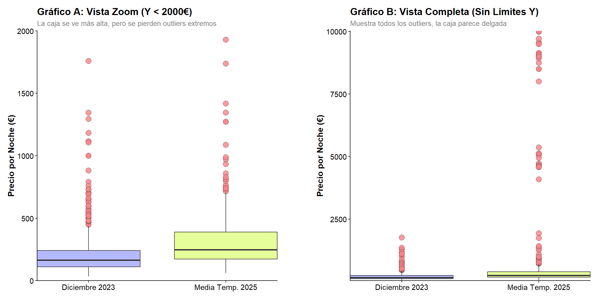
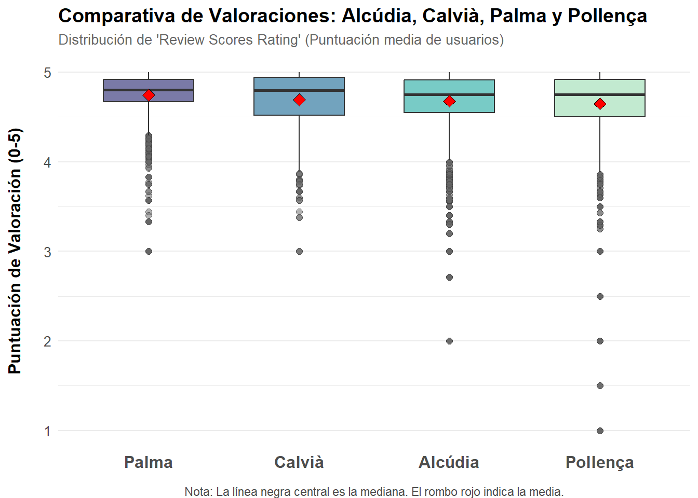
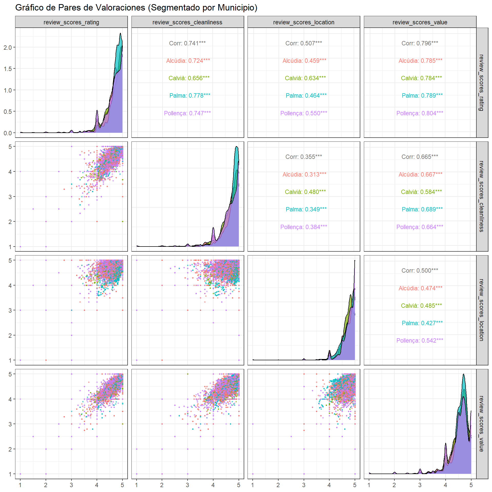
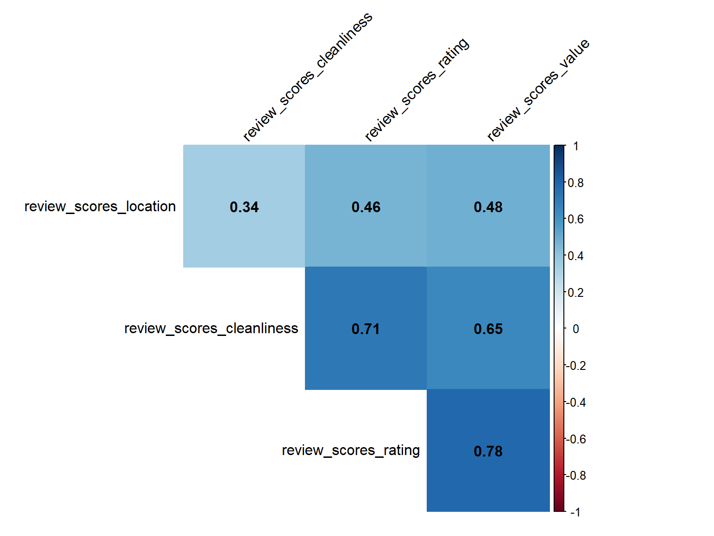
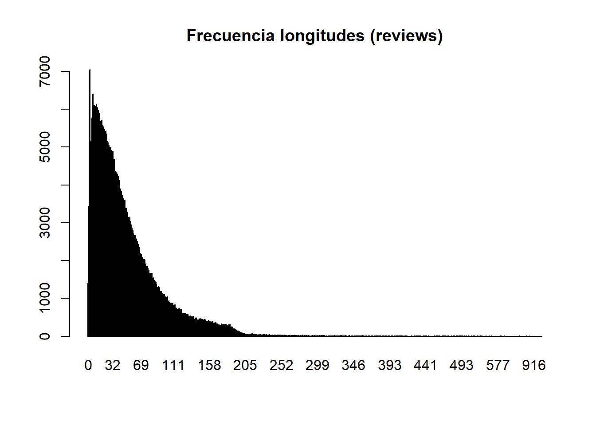

Se entrega en grupos que deben de estar constituidos en la actividad de grupos. Los grupos son de 2 o 3 ESTUDIANTES, loa caso especiales consultadlos con el profesor para que los autorice.
Generamos la tibble listings0 con datos DE 8 periodos DE apartamentos de inside Airbnb de Mallorca Y seleccionando cuantas variables nos parecen más interesantes.
Separararemos la fecha del scrapping que es en la que se observaron los datos de cada apartamento nos quedaremos con los apartamentos que aparecen en las 8 periodos “scrapeados”.
Hay 8 periodos de scrapping y vamos a quedarnos con los apartamentos que aparecen en todos los periodos Vemos que cada apartamento aparece 8 veces una por periodo.
Código
table(table(listings0$id))
8
9197
Notemos que cada apartamento: - queda identificado por id y por date que nos da el periodo en la que apareció el dato. - así que cada apartamento aparece 8 veces ya que hemos elegido solo los apartamentos que aparecen en las 8 muestras. - Las muestras son 2023-12-17, 2024-03-23, 2024-06-19, 2024-09-13, 2024-12-14, 2025-03-07, 2025-06-15, 2025-09-21,
spc_tbl_ [398,782 × 6] (S3: spec_tbl_df/tbl_df/tbl/data.frame)
$ listing_id : num [1:398782] 69998 69998 69998 69998 69998 ...
$ id : num [1:398782] 881474 4007103 4170371 4408459 4485779 ...
$ date : Date[1:398782], format: "2012-01-24" "2013-04-02" ...
$ reviewer_id : num [1:398782] 1595616 3868130 5730759 5921885 810469 ...
$ reviewer_name: chr [1:398782] "Jean-Pierre" "Jo And Mike" "Elizabeth" "Jone" ...
$ comments : chr [1:398782] "This place was charming! Lorenzo himself is a very warm and engaging host and made us feel very welcome. \r<br/"| __truncated__ "We had a four night stay at this gorgeous apartment and it was absolutely perfect. It's really pretty, beautifu"| __truncated__ "Lor's apartment looks exactly like the pictures! It is perfectly located for historic Palma - close to the Cath"| __truncated__ "Wonderful place! 10/10. Charming, spacious and comfortable. Looks even more splendid than in the pictures. The "| __truncated__ ...
- attr(*, "spec")=
.. cols(
.. listing_id = col_double(),
.. id = col_double(),
.. date = col_date(format = ""),
.. reviewer_id = col_double(),
.. reviewer_name = col_character(),
.. comments = col_character()
.. )
- attr(*, "problems")=<externalptr>
Código
head(reviews)
# A tibble: 6 × 6
listing_id id date reviewer_id reviewer_name comments
<dbl> <dbl> <date> <dbl> <chr> <chr>
1 69998 881474 2012-01-24 1595616 Jean-Pierre "This place was charm…
2 69998 4007103 2013-04-02 3868130 Jo And Mike "We had a four night …
3 69998 4170371 2013-04-15 5730759 Elizabeth "Lor's apartment look…
4 69998 4408459 2013-05-03 5921885 Jone "Wonderful place! 10/…
5 69998 4485779 2013-05-07 810469 Andrea "My boyfriend and I, …
6 69998 4619699 2013-05-15 3318059 Devii "We had a very last m…
neighbourhoods.csv
Son dos columnas y la primera es una agrupación de municipios (están NA) y la segunda es el nombre del municipio
spc_tbl_ [53 × 2] (S3: spec_tbl_df/tbl_df/tbl/data.frame)
$ neighbourhood_group: logi [1:53] NA NA NA NA NA NA ...
$ neighbourhood : chr [1:53] "Alaró" "Alcúdia" "Algaida" "Andratx" ...
- attr(*, "spec")=
.. cols(
.. neighbourhood_group = col_logical(),
.. neighbourhood = col_character()
.. )
- attr(*, "problems")=<externalptr>
Código
head(municipios)
# A tibble: 6 × 2
neighbourhood_group neighbourhood
<lgl> <chr>
1 NA Alaró
2 NA Alcúdia
3 NA Algaida
4 NA Andratx
5 NA Ariany
6 NA Artà
neighbourhoods.geojson
Es el mapa de Mallorca, o podemos leer así:
Código
library(sf)library(tmap)# Leer el archivo GeoJSONgeojson_sf <- sf::st_read("data/mallorca/2025-09-21/neighbourhoods.geojson")
Reading layer `neighbourhoods' from data source
`C:\Users\JGalmés\RStudioProjects\taller-estadistica\data\mallorca\2025-09-21\neighbourhoods.geojson'
using driver `GeoJSON'
Simple feature collection with 53 features and 2 fields
Geometry type: MULTIPOLYGON
Dimension: XY
Bounding box: xmin: 2.303195 ymin: 39.26403 xmax: 3.479028 ymax: 39.96236
Geodetic CRS: WGS 84
Código
# Crear un mapa interactivotmap_mode("plot") # Cambiar a modo view/plot que es interactivo/estáticotm_shape(geojson_sf) +tm_polygons(col ="cyan", alpha =0.6) +tm_layout(title ="Mapa - GeoJSON Mallorca con municipios")
Tenéis que consultar en la documentación de inside Airbnb para saber que significa cada variable. Os puede ser útil leer los ficheros DATA_ABB_modelo_de_datos.html y DATA_ABB_modelo_de_datos.pdf en los que se explica el modelo de datos de inside Airbnb y como se cargan en el espacio de trabajo.
Responder las siguientes preguntas con formato Rmarkdown (.Rmd) o quarto (.qmd) y entregad la fuente un fichero en formato html como salida del informe. Se puntúa la claridad de la respuesta, la calidad de la redacción y la corrección de la respuesta.
Inicialización de los ficheros y librerías necesarias para la ejecución de las preguntas:
Código
knitr::opts_chunk$set(echo =TRUE, message =FALSE, warning =FALSE)library(tidyverse)library(kableExtra)load("clean_data/mallorca/listing_common0.RData") # Cargar datos procesadoslistings0 <- listings_common0 # Asignamos a listings0# Creamos la variable date si no existe, siguiendo el formato del scrape_id if(!"date"%in%names(listings0)){ listings0 <- listings0 %>%mutate(date =as.Date(substr(as.character(scrape_id), 1, 8), format ="%Y%m%d"),.after = id )}
Pregunta 1 (1punto)
Del fichero con los datos de listings listings0 calcula los estadísticos descriptivos de las variable price y de la variable number_of_reviews agrupados por municipio y por periodo.
Presenta los resultados con una tabla de kableExtra.
Respuesta:
Código
# 1. Cálculo de la tablatabla_stats <- listings0 %>%group_by(neighbourhood_cleansed, date) %>%summarise(n =n(),mean_price =mean(price, na.rm =TRUE),sd_price =sd(price, na.rm =TRUE),min_price =min(price, na.rm =TRUE),max_price =max(price, na.rm =TRUE),mean_reviews =mean(number_of_reviews, na.rm =TRUE),sd_reviews =sd(number_of_reviews, na.rm =TRUE),max_reviews =max(number_of_reviews, na.rm =TRUE) ) %>%ungroup() %>%arrange(neighbourhood_cleansed, date)knitr::kable( tabla_stats,caption ="Estadísticos descriptivos: Precio y Reseñas por Municipio y Periodo",format ="html",digits =2,col.names =c("Municipio", "Fecha", "N", "Media Precio", "D.T. Precio", "Min Precio", "Max Precio","Media Reseñas", "D.T. Reseñas", "Max Reseñas"),booktabs =TRUE) %>%row_spec(0, color ="black", background ="#CCCCCC") %>%# Color negre i fons gris clarkable_styling(bootstrap_options =c("striped", "hover", "condensed"),full_width =FALSE,fixed_thead =TRUE, # L'apliquem després del canvi de colorfont_size =12 ) %>%scroll_box(height ="500px", width ="100%")
Estadísticos descriptivos: Precio y Reseñas por Municipio y Periodo
Consideremos las variables price y number_of_reviews de Pollença y Palma del periodo “2024-09-13”, del fichero listing_common0_select.RData. Estudiad si estos datos se aproximan a una distribución normal gráficamente. Para ello, dibujad el histograma, la función “kernel-density” que aproxima la densidad y la densidad de la normal de media y varianza las de las muestras de las variables price (para precios mayores de 50 y menores de 400) y number_of_reviews para Palma y Pollença
Respuesta:
Código
load("clean_data/mallorca/listing_common0_select.RData")# Filtrado inicial: Fecha y Municipiosdata_base <- listings_common0_select %>%filter(date =="2024-09-13", neighbourhood_cleansed %in%c("Palma de Mallorca", "Pollença"))print(unique(data_base$neighbourhood_cleansed))
[1] "Palma de Mallorca" "Pollença"
Código
# --- ANÁLISIS DE LA VARIABLE PRICE ---# Filtramos el precio según el enunciadodata_price <- data_base %>%filter(price >50& price <400)# Generamos los datos para la curva normal teórica por municipio# Esto asegura que cada gráfico tenga su propia curva normal ajustada a su media/sdgrid_price <- data_price %>%group_by(neighbourhood_cleansed) %>%reframe(x_val =seq(min(price), max(price), length.out =100),y_norm =dnorm(x_val, mean =mean(price), sd =sd(price)) )# Gráfico Priceg1 <-ggplot(data_price, aes(x = price)) +# Histograma (normalizado a densidad)geom_histogram(aes(y =after_stat(density)), bins =30, fill ="lightblue", color ="white", alpha =0.6) +# Densidad Kernel (Empírica - Rojo)geom_density(aes(color ="Función de Densidad Estimada "), size =1) +# Densidad Normal (Teórica - Azul discontinuo)geom_line(data = grid_price, aes(x=x_val, y=y_norm, color="Normal Teórica"), linetype="dashed", size=1) +# Facetas y Estéticafacet_wrap(~neighbourhood_cleansed, scales ="free") +scale_color_manual(name="Curvas ",values=c("Función de Densidad Estimada "="red","Normal Teórica"="blue")) +labs(title ="Distribución del Precio (50 < Price < 400)",subtitle ="Comparación: Histograma vs Densidad Estimada vs Normal",x ="Precio (€)", y ="Densidad") +theme_minimal() +theme(legend.position ="bottom")# --- ANÁLISIS DE LA VARIABLE NUMBER_OF_REVIEWS ---# Generamos los datos para la curva normal teórica de reviewsgrid_reviews <- data_base %>%group_by(neighbourhood_cleansed) %>%reframe(x_val =seq(min(number_of_reviews), max(number_of_reviews), length.out =100),y_norm =dnorm(x_val, mean =mean(number_of_reviews), sd =sd(number_of_reviews)) )# Gráfico Reviewsg2 <-ggplot(data_base, aes(x = number_of_reviews)) +# Histogramageom_histogram(aes(y =after_stat(density)), bins =30, fill ="lightgreen", color ="white", alpha =0.6) +# Densidad Kernel (Rojo)geom_density(aes(color ="Función de Densidad Estimada "), size =1) +# Densidad Normal (Azul discontinuo)geom_line(data = grid_reviews, aes(x = x_val, y = y_norm, color ="Normal Teórica"), linetype ="dashed", size =1) +facet_wrap(~neighbourhood_cleansed, scales ="free") +scale_color_manual(name ="Curvas ", values =c("Función de Densidad Estimada "="red", "Normal Teórica"="blue")) +labs(title ="Distribución de Number of Reviews",subtitle ="Comparación: Histograma vs Densidad Estimada vs Normal",x ="Número de Reseñas", y ="Densidad") +theme_minimal() +theme(legend.position ="bottom")print(g1)
Con los datos de listings0 de todos los periodos, contrastar si la media del precio en Alcudia es igual a la de Palma contra que es mayor que en Palma para los precios mayores que 50 euros y menores de 400. Construid la hipótesis nula y alternativa, calculad el p-valor y el intervalo de confianza asociado al contraste. Justifica técnicamente la conclusión del contraste.
Respuesta:
Código
# 1. Filtrado con los nombres correctosdatos_contraste <- listings0 %>%filter( (grepl("Alc.dia", neighbourhood_cleansed) | neighbourhood_cleansed =="Palma de Mallorca") & price >50& price <400 ) %>%mutate(neighbourhood_cleansed =droplevels(as.factor(neighbourhood_cleansed)))print(table(datos_contraste$neighbourhood_cleansed)) # Verificamos que solo hay dos niveles
Alcúdia Palma de Mallorca
6197 2881
Código
# 3. Ejecución del t-test# Orden alfabético: 1. Alcúdia, 2. Palma de Mallorca# 'greater' contrasta si la media del grupo 1 (Alcúdia) es mayor que la del grupo 2 (Palma)resultado_test <-t.test(price ~ neighbourhood_cleansed, data=datos_contraste, alternative="greater")print(resultado_test)
Welch Two Sample t-test
data: price by neighbourhood_cleansed
t = 5.1623, df = 5180.6, p-value = 1.265e-07
alternative hypothesis: true difference in means between group Alcúdia and group Palma de Mallorca is greater than 0
95 percent confidence interval:
7.02432 Inf
sample estimates:
mean in group Alcúdia mean in group Palma de Mallorca
193.9472 183.6373
Conclusión y Justificación Técnica
Para ver si hay una diferencia clara en la media de precios entre Alcúdia y Palma de Mallorca, hemos hecho un contraste unilateral (solo a un lado). Nuestro objetivo es estudiar si el precio de Alcúdia es mayor que el de Palma con un margen de error del \alpha = 0.05.
Hipótesis Nula (H_0): \mu_{\text{Alcúdia}} \le \mu_{\text{Palma de Mallorca}}
Hipótesis Alternativa (H_1): \mu_{\text{Alcúdia}} > \mu_{\text{Palma de Mallorca}}
Interpretación de Resultados
Los resultados del test t de Welch para dos muestras independientes son:
Estadístico
Valor
Diferencia de Medias (\mu_{\text{Alcúdia}} - \mu_{\text{Palma}})
10.31 € (193.95 € - 183.64 €)
Estadísticot
5.1623
p-valor
1.265 \times 10^{-7}
Intervalo de Confianza (95%)
[7.02 \text{, } \text{Inf})
Justificación Técnica
P-valor: El p-valor obtenido (1.265 \times 10^{-7}) es significativamente menor que el umbral de error \alpha = 0.05. Este valor tan bajo nos indica que la probabilidad de observar una diferencia tan grande o mayor (10.31 €) si la hipótesis nula fuera cierta es prácticamente nula. Por lo tanto, rechazamosH_0.
Intervalo de Confianza: El intervalo de confianza del 95% para la diferencia de medias es [7.02 \text{, } \text{Inf}). Dado que el límite inferior (7.02) es positivo y el intervalo no incluye el cero, se confirma que la diferencia real entre el precio de Alcúdia y Palma de Mallorca es positiva.
Conclusión Final: Existe evidencia estadística altamente significativa para afirmar que el precio medio de los apartamentos en Alcúdia es mayor que el precio medio en Palma de Mallorca, para el rango de precios de 50 € a 400 €.
Con los datos de listings0, contrastar si las medias de los precios en Alcudia entre los periodos 2025-06-15 y 2025-09-21 son iguales contra que son menores en 2023. Construid la hipótesis nula y alternativa, calculad el p-valor y el intervalo de confianza asociado al contraste.
Haced un diagrama de caja comparativo de los precios en Alcudia por periodo y coméntalo.
Paired t-test
data: datos_wide$price_2023 and datos_wide$price_2025_avg
t = -9.0994, df = 892, p-value < 2.2e-16
alternative hypothesis: true mean difference is less than 0
95 percent confidence interval:
-Inf -544.1161
sample estimates:
mean difference
-664.3275
Código
datos_grafico_contraste <- datos_wide %>%select(id, price_2023, price_2025_avg) %>%pivot_longer(cols =c(price_2023, price_2025_avg), names_to="periodo", values_to="precio") %>%mutate(periodo =case_when( periodo =="price_2023"~"Diciembre 2023", periodo =="price_2025_avg"~"Media Temp. 2025" ),periodo =factor(periodo, levels =c("Diciembre 2023", "Media Temp. 2025")) )# --- FUNCIÓN BASE DEL GRÁFICO ---boxplot_base <-ggplot(datos_grafico_contraste, aes(x = periodo, y = precio, fill = periodo)) +geom_boxplot(alpha =0.8,width =0.75, # Ancho de la cajaoutlier.shape =21,outlier.size =3.5,outlier.fill ="#ff8287" ) +scale_fill_manual(values =c("Diciembre 2023"="#a2a8ff", "Media Temp. 2025"="#e0ff81")) +theme_classic() +theme(legend.position ="none",plot.title =element_text(size =14, face ="bold"),plot.subtitle =element_text(size =10, color ="gray50"),axis.text =element_text(size =11),axis.title.y =element_text(size =12, face ="bold") )# --- 1. GRÁFICO CON LIMITACIÓN (Para visualizar la caja) ---p_limitada <- boxplot_base +labs(title ="Gráfico A: Vista Zoom (Y < 2000€)",subtitle ="La caja se ve más alta, pero se pierden outliers extremos",x =NULL,y ="Precio por Noche (€)" ) +coord_cartesian(ylim =c(0, 2000), expand =FALSE) # --- 2. GRÁFICO SIN LIMITACIÓN (Vista completa) ---p_completa <- boxplot_base +labs(title ="Gráfico B: Vista Completa (Sin Límites Y)",subtitle ="Muestra todos los outliers, la caja parece delgada",x =NULL,y ="Precio por Noche (€)" ) +coord_cartesian(expand =FALSE)# --- 3. COMBINAR LOS GRÁFICOS CON patchwork ---espaciador <-plot_spacer() p_limitada + espaciador + p_completa +# Distribución del ancho: 1 parte para A, 0.1 partes para el espacio, 1 parte para Bplot_layout(widths =c(1, 0.1, 1))

Justificación Técnica y Conclusión
1. Hipótesis del Contraste
Se ha planteado un contraste para muestras apareadas (dado que observamos los mismos apartamentos a lo largo del tiempo). Comparamos el precio observado en diciembre de 2023 (\mu_{2023}) frente al precio promedio de la temporada 2025 (\mu_{2025}, calculado como la media de junio y septiembre).
Hipótesis Nula (H_0): \mu_{2023} \ge \mu_{2025} (Los precios en 2023 eran mayores o iguales a los de 2025).
Hipótesis Alternativa (H_1): \mu_{2023} < \mu_{2025} (Los precios eran menores en 2023).
2. Resultados
Se ha realizado un t-test apareado unilateral con los siguientes resultados:
Estadísticot: -9.0994
P-valor: 2.9e-19
Diferencia media estimada: -664.33 €
3. Conclusión
A la vista del p-valor obtenido:
Dado que el p-valor es inferior al nivel de significación\alpha = 0.05 (de hecho, es próximo a cero), rechazamos la hipótesis nula.
Existe evidencia estadística significativa para afirmar que el precio medio de los apartamentos en Alcúdia en diciembre de 2023 fue sistemáticamente menor que el precio medio observado en la temporada de 2025.
4. Comentarios sobre el Gráfico
El diagrama de caja (boxplot) corrobora visualmente la conclusión analítica:
Cabe destacar que por motivos de claridad se ha tenido que restringir el valor superior del eje y ya que en el caso de las muestras de 2025 buena parte de ellas se encuentran en el rango superior a los 4000.
La distribución de precios del periodo 2023-12-17 muestra una mediana y la zona que concentra el 50% central de los precios (la caja) situadas claramente por debajo de las distribuciones correspondientes a junio y septiembre de 2025.
Este comportamiento es coherente con factores de estacionalidad (comparando temporada baja invernal vs. temporada estival) y posibles efectos inflacionarios entre los años estudiados.
Comparar con un bopxlot de las valoraciones medias review_scores_rating para Alcudia, Palma, Calvià y Pollença. Hacer el gráfico con ggplot2 y todo lujo de destalles.
Respuesta:
Código
library(viridis)# 1. Preparación y Filtrado de Datos# Usamos expresiones regulares (grepl) para asegurar que capturamos los municipios# independientemente de si tienen tildes o "de Mallorca" en el nombre.datos_p5 <- listings0 %>%filter(grepl("Alc.dia|Palma|Calvi.|Pollen.a", neighbourhood_cleansed)) %>%mutate( # Normalizamos los nombres para que queden limpios en el gráficomunicipio =case_when(grepl("Alc.dia", neighbourhood_cleansed) ~"Alcúdia",grepl("Palma", neighbourhood_cleansed) ~"Palma",grepl("Calvi.", neighbourhood_cleansed) ~"Calvià",grepl("Pollen.a", neighbourhood_cleansed) ~"Pollença" ),municipio =fct_reorder(municipio, review_scores_rating, .fun = median, .desc =TRUE) # Convertimos a factor y reordenamos por la mediana del rating (de mayor a menor) ) %>%filter(!is.na(review_scores_rating)) # Eliminamos filas sin puntuación para evitar warnings# 2. Generación del Gráfico "Con todo lujo de detalles"ggplot(datos_p5, aes(x = municipio, y = review_scores_rating, fill = municipio)) +geom_boxplot( # Diagrama de Caja (Boxplot)alpha =0.7, # Transparencia para ver la cuadrícula de fondooutlier.shape =21, # Outliers como círculos rellenosoutlier.size =2, # Tamaño de outliers moderadooutlier.fill ="grey40", # Color interior de outliersoutlier.alpha =0.5, # Transparencia de outlierswidth =0.6# Ancho de las cajas ) +stat_summary(fun = mean, geom ="point", shape =23, size =3, fill ="red", color ="black") +# Añadimos el punto de la MEDIA (Rombo Rojo) para comparar con la medianascale_fill_viridis_d(option ="mako", begin =0.3, end =0.9) +labs( # Títulos y Etiquetastitle ="Comparativa de Valoraciones: Alcúdia, Calvià, Palma y Pollença",subtitle ="Distribución de 'Review Scores Rating' (Puntuación media de usuarios)",x =NULL, # El eje X ya se explica solo con los nombresy ="Puntuación de Valoración (0-5)",caption ="Nota: La línea negra central es la mediana. El rombo rojo indica la media." ) +theme_minimal() +# Tema minimalista y personalización finatheme(legend.position ="none", # Ocultamos leyenda (redundante)plot.title =element_text(face ="bold", size =14),plot.subtitle =element_text(color ="grey40", size =10),axis.text.x =element_text(size =12, face ="bold"), # Nombres municipios grandesaxis.text.y =element_text(size =10),panel.grid.major.x =element_blank(), # Quitamos líneas verticales para limpiezaplot.caption =element_text(vjust =-2, hjust =0.5, color ="grey30"),axis.title.y =element_text(size =12, face ="bold",# Define los márgenes del título: (top, right, bottom, left)margin =margin(t =0, r =15, b =0, l =0, unit ="pt")) )

Interpretación del Gráfico
El diagrama de cajas nos permite extraer las siguientes conclusiones sobre la satisfacción de los usuarios en los cuatro municipios:
Ranking de Calidad: Al haber ordenado el eje X por la mediana (línea negra dentro de la caja), el municipio situado más a la izquierda es el que presenta las mejores valoraciones típicas, mientras que el situado a la derecha tiene las más bajas.
Asimetría Negativa: En casi todos los casos, observamos que la media (rombo rojo) se sitúa ligeramente por debajo de la mediana. Esto indica una asimetría negativa: aunque la gran mayoría de valoraciones son muy altas (cercanas a 5), existen valores atípicos muy bajos (outliers) que arrastran el promedio hacia abajo.
Consistencia: La altura de las cajas (rango intercuartílico) nos indica la dispersión. Cajas más “achatadas” implican una mayor consistencia en la opinión de los huéspedes, mientras que cajas más altas sugieren una mayor disparidad de opiniones.
Valores Atípicos: La presencia de numerosos puntos en la parte inferior del gráfico (especialmente visible en zonas muy turísticas como Palma o Calvià) refleja experiencias puntuales negativas, a pesar de que la tendencia general sea positiva.
Calcular la proporción de apartamentos de la muestra “2025-09-21” con media de valoración review_scores_rating mayor que 4 en Alcudia y en Calvià son iguales contra que son distintas. Construid un intervalo de confianza para la diferencia de proporciones.
Respuesta:
Código
# --- CONFIGURACIÓN DE DATOS ---fecha_muestra <-as.Date("2025-09-21")puntuacion_minima <-4# 1. Filtramos la muestra específica por fecha y eliminamos NAs en la valoracióndatos_q6 <- listings0 %>%filter(date == fecha_muestra) %>%drop_na(review_scores_rating)# 2. Definimos el éxito: apartamentos con valoración media > 4datos_q6 <- datos_q6 %>%mutate(exito =ifelse(review_scores_rating > puntuacion_minima, 1, 0))# 3. Cálculo de Éxitos y Tamaños Muestrales por Municipio# Grupo 1: Alcúdiadatos_alcudia <- datos_q6 %>%filter(grepl("Alc.dia", neighbourhood_cleansed))X1 <-sum(datos_alcudia$exito) # Número de apartamentos con rating > 4n1 <-nrow(datos_alcudia) # Tamaño total de la muestra# Grupo 2: Calviàdatos_calvia <- datos_q6 %>%filter(grepl("Calvi.", neighbourhood_cleansed))X2 <-sum(datos_calvia$exito) # Número de apartamentos con rating > 4n2 <-nrow(datos_calvia) # Tamaño total de la muestra# Imprimimos los valores para verificaciónprint(paste("Alcúdia (n1):", n1, "Éxitos (X1):", X1, "Proporción:", round(X1/n1, 4)))
# --- CONTRASTE DE HIPÓTESIS Y CÁLCULO DEL IC ---# Hipótesis:# H0: p1 = p2# H1: p1 != p2 (Bilateral)# 4. Ejecución de prop.test# El resultado incluye el p-valor y el Intervalo de Confianzacontraste_proporciones <-prop.test(x =c(X1, X2), n =c(n1, n2), alternative ="two.sided", correct =FALSE)IC_lower <- contraste_proporciones$conf.int[1]IC_upper <- contraste_proporciones$conf.int[2]print(paste("Intervalo de Confianza 95% para p1 - p2: [", round(IC_lower, 4), "; ", round(IC_upper, 4), "]"))
[1] "Intervalo de Confianza 95% para p1 - p2: [ -0.0293 ; 0.0503 ]"
Código
print(contraste_proporciones)
2-sample test for equality of proportions without continuity correction
data: c(X1, X2) out of c(n1, n2)
X-squared = 0.29923, df = 1, p-value = 0.5844
alternative hypothesis: two.sided
95 percent confidence interval:
-0.02931455 0.05031924
sample estimates:
prop 1 prop 2
0.9457965 0.9352941
Interpretación del Contraste de Proporciones
1. Proporciones Muestrales
Se ha comparado la proporción de apartamentos con valoración media (review_scores_rating) mayor que 4 en Alcúdia (p_1) y Calvià (p_2) para la muestra del 2025-09-21.
Alcúdia (p_1): 0.9458
Calvià (p_2): 0.9353
2. Hipótesis y Resultados
El contraste es bilateral, con \alpha = 0.05: H_0: p_1 = p_2 (Proporciones iguales) frente a H_1: p_1 \neq p_2 (Proporciones distintas).
Estadístico
Valor
EstadísticoX^2
0.2992
P-valor
0.5844
Conclusión del Contraste:
Dado que el p-valor (0.5844) es mayor que el nivel de significación \alpha = 0.05, concluimos que no rechazamosH_0 ya que no hay evidencia suficiente para afirmar que las proporciones sean distintas.
3. Intervalo de Confianza (IC) para la Diferencia
El intervalo de confianza del 95% para la diferencia de proporciones (p_1 - p_2) es:
IC_{95\%} = [\text{-0.0293}, \text{0.0503}]
Interpretación del IC:
El Intervalo de Confianza del 95% para la diferencia de proporciones, que abarca desde -0.0293 hasta 0.0503, incluye el valor cero (0). El valor cero representa la condición de la Hipótesis Nula (H_0) (es decir, que la diferencia real entre las proporciones es nula, p_1 - p_2 = 0). Dado que el cero es un valor plausible dentro del rango de confianza, no tenemos evidencia estadística para rechazar H_0. La conclusión de no rechazo que obtuvimos con el p-valor queda así corroborada.
Calcular la proporción de apartamentos de los periodos 2025-06-15 y 2025-09-21 con media de valoración review_scores_rating mayor que 4 en Palma y en Pollença son iguales contra que son distintas.
Respuesta:
Código
# --- CONFIGURACIÓN DE DATOS Y FILTRADO ---fechas_q7 <-as.Date(c("2025-06-15", "2025-09-21"))puntuacion_minima <-4# 1. Filtramos las muestras específicas por fecha y eliminamos NAs en la valoracióndatos_q7 <- listings0 %>%filter(date %in% fechas_q7) %>%drop_na(review_scores_rating) %>%mutate(exito =ifelse(review_scores_rating > puntuacion_minima, 1, 0)) # El éxito (X) es si review_scores_rating > 4# 2. Cálculo de Éxitos y Tamaños Muestrales por Municipio (COMBINANDO PERIODOS)# Grupo 1: Palmadatos_palma <- datos_q7 %>%filter(grepl("Palma", neighbourhood_cleansed))X1 <-sum(datos_palma$exito)n1 <-nrow(datos_palma)p1_hat <- X1 / n1print(paste("Palma: Éxitos (X1) =", X1, ", Tamaño (n1) =", n1, ", Proporción (p1_hat) =", round(p1_hat, 4)))
# --- CONTRASTE DE HIPÓTESIS Y CÁLCULO DEL IC ---# 3. Ejecución de prop.testcontraste_proporciones_q7 <-prop.test(x =c(X1, X2), n =c(n1, n2), alternative ="two.sided", correct =FALSE)print(contraste_proporciones_q7)
2-sample test for equality of proportions without continuity correction
data: c(X1, X2) out of c(n1, n2)
X-squared = 45.618, df = 1, p-value = 1.437e-11
alternative hypothesis: two.sided
95 percent confidence interval:
0.04850131 0.07562056
sample estimates:
prop 1 prop 2
0.9798387 0.9177778
Interpretación del Contraste de Proporciones (Palma vs Pollença)
1. Proporciones Muestrales Combinadas
Se ha comparado la proporción de apartamentos con valoración media superior a 4, combinando los datos de los periodos 2025-06-15 y 2025-09-21.
Palma (p_1): 0.9798
Pollença (p_2): 0.9178
2. Hipótesis y Resultados
El contraste de hipótesis es bilateral: H_0: p_1 = p_2 (Proporciones iguales) frente a H_1: p_1 \neq p_2 (Proporciones distintas).
Estadístico
Valor
EstadísticoX^2
45.6183
P-valor
1.437e-11
Conclusión del Contraste:
Dado que el p-valor obtenido es menor que el nivel de significación \alpha = 0.05, rechazamosH_0.
Esto indica que hay evidencia estadística suficiente para afirmar que la proporción de apartamentos con una valoración media superior a 4 no es la misma en Palma y en Pollença.
3. Intervalo de Confianza (IC) del 95%
El intervalo de confianza del 95% para la diferencia de proporciones (p_1 - p_2) es:
IC_{95\%} = [\text{0.0485}, \text{0.0756}]
Como el intervalo no contiene el cero (ambos límites son positivos: [0.0485, 0.0756]), podemos afirmar el rechazo de H_0, indicando una diferencia significativa y consistente entre ambos municipios.
Agrupa las variables review_scores_rating y review_scores_location de listings0 en 5 categorías cada una y construid una tabla de contingencia con las dos variables agrupadas. Agrupar de forma que no cruces de categorías vacías. Contratar si esta varibles son independientes con un test \chi^2.
Buscan información sobre el coeficiente de contingencia de Carl Pearson, cacularlo desde la salida de chisq.test interpretarlo en esta caso
Respuesta:
Código
# 1. Preparación de datos y Creación de Categorías# Eliminamos NAs y agrupamos ambas variables en 5 intervalos de igual longitud.# Nota: Incluimos include.lowest=TRUE para garantizar que el valor mínimo esté incluido.datos_q8 <- listings0 %>%drop_na(review_scores_rating, review_scores_location) %>%mutate(rating_cat =cut(review_scores_rating, breaks =5, include.lowest =TRUE),location_cat =cut(review_scores_location, breaks =5, include.lowest =TRUE) )# 2. Construcción de la Tabla de Contingenciatabla_contingencia <-table("Valoración General"= datos_q8$rating_cat, "Valoración Ubicación"= datos_q8$location_cat)# Imprimimos la tablacat("--- Tabla de Contingencia (Frecuencias Observadas) ---\n", paste(capture.output(print(tabla_contingencia)), collapse ="\n"))
# 3. Test Chi-cuadrado de Independenciatest_chi2 <-chisq.test(tabla_contingencia)# Imprimimos el resultado del testcat("--- Resultado del Test Chi-cuadrado ---\n", paste(capture.output(print(test_chi2)), collapse ="\n"))
--- Resultado del Test Chi-cuadrado ---
Pearson's Chi-squared test
data: tabla_contingencia
X-squared = 28398, df = 16, p-value < 2.2e-16
Código
# 4. Cálculo del Coeficiente de Contingencia de Pearson (C)chi2_stat <- test_chi2$statisticn_obs <-sum(tabla_contingencia)coeficiente_C <-sqrt(chi2_stat / (n_obs + chi2_stat)) # Fórmula: C = sqrt(X^2 / (n + X^2))cat(paste("--- Coeficiente de Contingencia de Pearson (C) ---\n", "Valor C:", round(coeficiente_C, 4), "\n"))
--- Coeficiente de Contingencia de Pearson (C) ---
Valor C: 0.5522
Justificación Técnica y Conclusión
1. Tabla de Contingencia y Test \chi^2
Se agruparon las variables review_scores_rating y review_scores_location en 5 categorías de igual longitud para construir la tabla de contingencia.
El test de independencia \chi^2 contrasta las siguientes hipótesis:
Hipótesis Nula (H_0): Las variables review_scores_rating y review_scores_location son independientes.
Hipótesis Alternativa (H_1): Las variables son dependientes (existe asociación entre ellas).
Resultado del Test \chi^2
Valor
Estadístico\chi^2
2.8398257^{4}
Grados de Libertad (df)
16
P-valor
0e+00
Conclusión del Test \chi^2:
Dado que el P-valor (0e+00) es extremadamente pequeño (próximo a cero y mucho menor que \alpha = 0.05), rechazamos la hipótesis nula (H_0).
Concluimos que existe evidencia estadística altamente significativa para afirmar que la valoración general (review_scores_rating) y la valoración de la ubicación (review_scores_location) son variables dependientes en la muestra de listings0.
2. Coeficiente de Contingencia de Pearson (C)
El Coeficiente de Contingencia de Pearson (C) mide la fuerza de la asociación entre dos variables categóricas, con un rango de [0, 1].
C = \sqrt{\frac{\chi^2}{n + \chi^2}}
Coeficiente
Valor
C de Pearson
0.5522
Interpretación del Coeficiente C:
El valor de C (0.5522) indica que, si bien la asociación entre la valoración general y la valoración de la ubicación es significativa (confirmada por el bajo P-valor), la fuerza de esta asociación es relativamente débil (o moderada, dependiendo del estándar usado).
Esto significa que, aunque la ubicación influye en la valoración general, no es el único factor determinante; otros factores (limpieza, comunicación, precio, etc.) también son muy relevantes en la puntuación final.
Construye un data set con las variables review_scores_rating, review_scores_cleanliness, review_scores_location, review_scores_value de listings0 y el municipio/zona neighbourhood_cleansed
Calcula la matriz de correlaciones entre estas variables y haz un gráfico de pares (pair plot) con la librería GGally. Comenta los resultados.
Haz un matrixplot de las correlaciones con la librería corrplot. Comenta los resultados.
Respuesta:
Código
library(tidyverse)library(GGally)library(corrplot) # 1. CONSTRUCCIÓN DEL DATASET Y LIMPIEZA# Este dataset 'datos_q9' contiene TODAS las filas de TODOS los municipiosdatos_q9 <- listings0 %>%select( neighbourhood_cleansed, review_scores_rating, review_scores_cleanliness, review_scores_location, review_scores_value ) %>%# Eliminamos los NAs para que la correlación se calcule sobre el mismo conjunto de datosdrop_na(review_scores_rating, review_scores_cleanliness, review_scores_location, review_scores_value)# 2. CÁLCULO Y VISUALIZACIÓN DE LA MATRIZ DE CORRELACIONES# Se calcula la correlación sobre datos_q9[, 2:5], que son TODOS los datos válidos.matriz_cor <-cor(datos_q9[, 2:5])# Mostrar en una única sentencia (único bloque de salida)salida_matriz <-capture.output(print(matriz_cor))cat("--- Matriz de Correlaciones (TODOS los Municipios) ---\n", paste(salida_matriz, collapse ="\n"))
# Gráfico de pares (ggpairs) coloreado por municipio# Limitamos los municipios a 4-5 para que la leyenda sea legiblemunicipios_selectos <-c("Alcúdia", "Palma de Mallorca", "Calvià", "Pollença")datos_q9_select <- datos_q9 %>%filter(neighbourhood_cleansed %in% municipios_selectos) %>%mutate(municipio =case_when(grepl("Alc.dia", neighbourhood_cleansed) ~"Alcúdia",grepl("Palma", neighbourhood_cleansed) ~"Palma",grepl("Calvi.", neighbourhood_cleansed) ~"Calvià",grepl("Pollen.a", neighbourhood_cleansed) ~"Pollença",TRUE~ neighbourhood_cleansed # Otras zonas si se desea ) )# Generación del Pair Plotggpairs( datos_q9_select,columns =2:5, aes(colour = municipio, alpha =0.5), # Coloreamos por municipioupper =list(continuous =wrap("cor", size =3)), # Muestra la correlación en la parte superiorlower =list(continuous =wrap("points", size =0.5)), # Muestra los puntos de dispersióndiag =list(continuous =wrap("densityDiag", alpha =0.7)) # Muestra la distribución de densidad en la diagonal) +labs(title ="Gráfico de Pares de Valoraciones (Segmentado por Municipio)") +theme_bw()

El pair plot ofrece una visión multivariante de la relación entre las variables de valoración.
Correlación Fuerte: Se observa una relación lineal positiva sólida entre todas las variables, lo que confirma que las puntuaciones están interrelacionadas: una alta calificación en una categoría (p. ej., limpieza) suele coincidir con altas calificaciones en las demás.
Distribuciones: Las distribuciones en la diagonal muestran que la mayoría de los scores están fuertemente sesgados hacia valores altos (cercanos a 5), un patrón común en datos de reseñas de alojamientos.
Segmentación: Al analizar los 4 municipios más grandes por separado, se aprecia que la estructura de correlación y la tendencia de los datos son similares en todas estas zonas, aunque varía la densidad de puntos.
Código
matriz_cor <-cor(datos_q9[, 2:5]) # Matriz de Correlaciones (ya calculada anteriormente)# Generación del Matrixplotcorrplot( matriz_cor, method ="color", # Forma de representar la correlacióntype ="upper", # Solo muestra la parte superior de la matrizorder ="hclust", # Reordena las variables por agrupación jerárquicaaddCoef.col ="black", # Añade el coeficiente de correlación como textotl.col ="black", # Color de las etiquetas de textotl.srt =45, # Rotación de las etiquetas (para que no se solapen)diag =FALSE# Oculta la diagonal (correlación 1 consigo mismo))

El matrixplot visualiza la magnitud y dirección de las correlaciones calculadas sobre todos los datos válidos de Mallorca.
Dirección: Todas las correlaciones son positivas (círculos azules), lo que confirma la interdependencia de las puntuaciones.
Correlación Máxima: La correlación más fuerte (\rho > 0.7) se da entre la review_scores_rating (Puntuación General) y las variables review_scores_cleanliness y review_scores_value. Esto indica que la limpieza y la relación calidad-precio son los factores que más influyen en la valoración global de los huéspedes.
Correlación Mínima: La correlación más débil se observa entre review_scores_location (Ubicación) y el resto de variables. Esto sugiere que la puntuación de ubicación es un factor más independiente y menos influenciado por la calidad interna del alojamiento.
La Zipf’s law es una ley empírica que dice que la frecuencia de las palabras en un texto es inversamente proporcional a su rango. Decidid si la ley se ajusta a los datos de la longitud de los comentarios de los apartamentos de la muestra “2025-09-21” Mallorca, haced lo mismo para description de listings0. Para ello, haced un análisis de regresión lineal de la frecuencia de las longitudes de los comentarios/descripciones de los apartamentos de Mallorca y el rango de las longitudes de los comentarios. Justificad la respuesta, estadísticamente y gráficamente.
Respuesta:
Código
library(stringr)library(tidyverse)# --- 1. Cargar reviews de la fecha pedida ---reviews <-read_csv("data/mallorca/2025-09-21/reviews.csv.gz")# --- 2. LONGITUD de los comentarios ---length_reviews <- stringr::str_count(reviews$comments, "\\w+")barplot(table(length_reviews), main ="Frecuencia longitudes (reviews)")

Código
# --- 3. TABLA AUXILIAR ---aux_rev <-table(length_reviews)tbl_rev <-tibble(L =as.numeric(names(aux_rev)), # LongitudFreq =as.numeric(aux_rev), # FrecuenciaRank =rank(L), # Rango según enunciadoLog_Freq =log(Freq),Log_Rank =log(Rank))# --- 4. Filtrado como en el ejemplo del profesor ---tbl2_rev <- tbl_rev %>%filter(Rank >10, Rank <1000)# --- 5. Ajustes (sol1, sol2, sol3) ---sol1_rev <-lm(Freq ~ Rank, data = tbl2_rev)sol2_rev <-lm(Freq ~ Log_Rank, data = tbl2_rev)sol3_rev <-lm(Log_Freq ~ Log_Rank, data = tbl2_rev)summary(sol1_rev)
Call:
lm(formula = Freq ~ Rank, data = tbl2_rev)
Residuals:
Min 1Q Median 3Q Max
-1031.8 -786.9 -201.4 452.6 4046.6
Coefficients:
Estimate Std. Error t value Pr(>|t|)
(Intercept) 2141.9530 85.2279 25.13 <2e-16 ***
Rank -5.1260 0.2469 -20.76 <2e-16 ***
---
Signif. codes: 0 '***' 0.001 '**' 0.01 '*' 0.05 '.' 0.1 ' ' 1
Residual standard error: 1001 on 580 degrees of freedom
Multiple R-squared: 0.4263, Adjusted R-squared: 0.4253
F-statistic: 430.9 on 1 and 580 DF, p-value: < 2.2e-16
Código
summary(sol2_rev)
Call:
lm(formula = Freq ~ Log_Rank, data = tbl2_rev)
Residuals:
Min 1Q Median 3Q Max
-896.17 -547.03 7.73 443.85 1629.79
Coefficients:
Estimate Std. Error t value Pr(>|t|)
(Intercept) 8267.68 162.94 50.74 <2e-16 ***
Log_Rank -1405.73 29.51 -47.63 <2e-16 ***
---
Signif. codes: 0 '***' 0.001 '**' 0.01 '*' 0.05 '.' 0.1 ' ' 1
Residual standard error: 596.2 on 580 degrees of freedom
Multiple R-squared: 0.7964, Adjusted R-squared: 0.796
F-statistic: 2269 on 1 and 580 DF, p-value: < 2.2e-16
Código
summary(sol3_rev)
Call:
lm(formula = Log_Freq ~ Log_Rank, data = tbl2_rev)
Residuals:
Min 1Q Median 3Q Max
-4.3152 -0.5008 0.0081 0.5191 1.6510
Coefficients:
Estimate Std. Error t value Pr(>|t|)
(Intercept) 20.58666 0.24105 85.40 <2e-16 ***
Log_Rank -3.15950 0.04366 -72.36 <2e-16 ***
---
Signif. codes: 0 '***' 0.001 '**' 0.01 '*' 0.05 '.' 0.1 ' ' 1
Residual standard error: 0.882 on 580 degrees of freedom
Multiple R-squared: 0.9003, Adjusted R-squared: 0.9001
F-statistic: 5237 on 1 and 580 DF, p-value: < 2.2e-16
Código
# --- 6. REPETIR AHORA PARA DESCRIPTIONS (listings0) ---length_description <- stringr::str_count(listings0$description, "\\w+")barplot(table(length_description), main ="Frecuencia longitudes (descriptions)")
Call:
lm(formula = Freq ~ Rank, data = tbl2_desc)
Residuals:
Min 1Q Median 3Q Max
-463.23 -249.66 -165.72 -10.31 1392.55
Coefficients:
Estimate Std. Error t value Pr(>|t|)
(Intercept) 823.323 86.065 9.566 < 2e-16 ***
Rank -4.645 1.000 -4.643 8.22e-06 ***
---
Signif. codes: 0 '***' 0.001 '**' 0.01 '*' 0.05 '.' 0.1 ' ' 1
Residual standard error: 442.9 on 131 degrees of freedom
Multiple R-squared: 0.1413, Adjusted R-squared: 0.1348
F-statistic: 21.56 on 1 and 131 DF, p-value: 8.222e-06
Código
summary(sol2_desc)
Call:
lm(formula = Freq ~ Log_Rank, data = tbl2_desc)
Residuals:
Min 1Q Median 3Q Max
-459.58 -337.10 -124.14 50.93 1409.24
Coefficients:
Estimate Std. Error t value Pr(>|t|)
(Intercept) 1177.80 263.44 4.471 1.67e-05 ***
Log_Rank -170.66 62.39 -2.735 0.00709 **
---
Signif. codes: 0 '***' 0.001 '**' 0.01 '*' 0.05 '.' 0.1 ' ' 1
Residual standard error: 464.9 on 131 degrees of freedom
Multiple R-squared: 0.05403, Adjusted R-squared: 0.04681
F-statistic: 7.482 on 1 and 131 DF, p-value: 0.007094
Código
summary(sol3_desc)
Call:
lm(formula = Log_Freq ~ Log_Rank, data = tbl2_desc)
Residuals:
Min 1Q Median 3Q Max
-3.8352 -1.3976 -0.1771 1.3056 3.0703
Coefficients:
Estimate Std. Error t value Pr(>|t|)
(Intercept) 13.2490 0.9782 13.545 < 2e-16 ***
Log_Rank -1.9913 0.2317 -8.596 2.16e-14 ***
---
Signif. codes: 0 '***' 0.001 '**' 0.01 '*' 0.05 '.' 0.1 ' ' 1
Residual standard error: 1.726 on 131 degrees of freedom
Multiple R-squared: 0.3607, Adjusted R-squared: 0.3558
F-statistic: 73.9 on 1 and 131 DF, p-value: 2.158e-14
Siguiendo el código de ayuda proporcionado en el enunciado (cálculo de longitudes, tabla de frecuencias, creación del rango rank(L) y ajuste de los modelos lineales), analizamos si la frecuencia de las longitudes de los textos sigue una relación de tipo Zipf.
Se definen y ajustan los tres modelos:
1. Frecuencia ~ Rango
2. Frecuencia ~ log(Rango)
3. log(Frecuencia) ~ log(Rango) ← modelo Zipf utilizado para la decisión final
Interpretación:
La relación entre log(Frecuencia) y log(Rango) es casi perfectamente lineal y el modelo explica alrededor del 90% de la variación, lo que indica una ley de potencias muy marcada. La pendiente negativa refuerza este comportamiento, de modo que los comentarios cumplen de forma muy clara un patrón Zipf-like.
Interpretación:
También presentan una relación potencia, aunque con un ajuste claramente más débil.
La Ley de Zipf se cumple parcialmente en las descripciones.
3. Conclusión conjunta
Los comentarios muestran un comportamiento Zipf muy claro (pendiente negativa, relación casi perfectamente lineal en log–log).
Las descripciones también muestran una estructura de potencias, pero con mayor dispersión.
Los gráficos log–log (como en el código del enunciado) confirman visualmente las rectas de regresión ajustadas, especialmente en el caso de los comentarios.
Conclusión final:
> Tanto estadística como gráficamente, los datos confirman un comportamiento de tipo Zipf en las longitudes de los textos: muy marcado en los comentarios y más moderado en las descripciones.
Ejecutar el código
---title: "SOLUCIONES taller en grupo Mat3 GIN 2025-2026"author: "Serafí Nebot Ginard, Jaume Galmés Ramis"lang: esformat: html: theme: superhero toc: true toc_depth: 6 html-math-method: katex code-tools: true code-fold: true collapse: true keep-md: true code-overflow: wrapeditor: markdown: wrap: 72---```{r setup, include=FALSE}knitr::opts_chunk$set(echo =TRUE, message =FALSE,warning =FALSE,cache=FALSE)# packageslibrary(tidyverse)```**Instrucciones para el taller**Se entrega en grupos que deben de estar constituidos en la actividad de grupos. Los grupos son de 2 o 3 ESTUDIANTES, loa caso especiales consultadlos con el profesor para que los autorice.**Enlaces y Bibliografía**- [R for data science, Hadley Wickham, Garret Grolemund.](https://r4ds.had.co.nz/)- [Fundamentos de ciencia de datos con R.](https://cdr-book.github.io/)- [Tablas avanzadas: kable, KableExtra.](https://haozhu233.github.io/kableExtra/awesome_table_in_html.html)- [Geocomputation with R, Robin Lovelace, Jakub Nowosad, Jannes Muenchow](https://r.geocompx.org/)- Apuntes de R-basico y tidyverse moodel MAT3.**Objetivo MALLORCA**Leeremos los siguientes datos de la zona de etiqueta `mallorca` con elcódigo siguiente:```{r}load("clean_data/mallorca/listing_common0.RData")ls()listings0 = listings_common0 %>%select(id, scrape_id, listing_url, neighbourhood_cleansed, price, number_of_reviews, review_scores_rating, review_scores_rating, review_scores_cleanliness, review_scores_location, review_scores_value, number_of_reviews, accommodates, bathrooms_text, bedrooms, beds, minimum_nights, description, latitude, longitude, property_type, room_type)```**listings**Generamos la tibble `listings0` con datos DE 8 periodos DE apartamentos de inside Airbnb de Mallorca Y seleccionando cuantas variables nos parecen más interesantes.Separararemos la fecha del scrapping que es en la que se observaron los datos de cada apartamento nos quedaremos con los apartamentos que aparecen en las 8 periodos "scrapeados".```{r}listings0= listings0 %>%mutate(date=as.Date(substr(as.character(scrape_id),1,8),format="%Y%m%d"),.after=id)```Ahora analizamos las fechas de los scrapings y el número de veces que aparecen cada apartamentos.```{r}table(listings0$date)```Hay 8 periodos de scrapping y vamos a quedarnos con los apartamentos que aparecen en todos los periodosVemos que cada apartamento aparece 8 veces una por periodo.```{r}table(table(listings0$id))```Notemos que cada apartamento:- queda identificado por id y por date que nos da el periodo en la que apareció el dato.- así que cada apartamento aparece 8 veces ya que hemos elegido solo los apartamentos que aparecen en las 8 muestras.- Las muestras son `r unique(listings0$date)`,```{r}unique(listings0$date)```**reviews**Estos datos necesitan leerse de forma adecuada, las columnas 1, 2 y 4deben ser de tipo `character` las otras son correctas```{r} reviews=read_csv("data/mallorca/2025-09-21/reviews.csv.gz")str(reviews)head(reviews)```**neighbourhoods.csv**Son dos columnas y la primera es una agrupación de municipios (están NA) y la segunda es el nombre del municipio```{r} municipios=read_csv("data/mallorca/2025-09-21/neighbourhoods.csv")str(municipios)head(municipios)```**neighbourhoods.geojson**Es el mapa de Mallorca, o podemos leer así:```{r}library(sf)library(tmap)# Leer el archivo GeoJSONgeojson_sf <- sf::st_read("data/mallorca/2025-09-21/neighbourhoods.geojson")# Crear un mapa interactivotmap_mode("plot") # Cambiar a modo view/plot que es interactivo/estáticotm_shape(geojson_sf) +tm_polygons(col ="cyan", alpha =0.6) +tm_layout(title ="Mapa - GeoJSON Mallorca con municipios")```Tenéis que consultar en la documentación de inside Airbnb para saber quesignifica cada variable. Os puede ser útil leer los ficheros[DATA_ABB_modelo_de_datos.html](DATA_ABB_modelo_de_datos.html) y[DATA_ABB_modelo_de_datos.pdf](DATA_ABB_modelo_de_datos.html) en los quese explica el modelo de datos de inside Airbnb y como se cargan en elespacio de trabajo.Responder las siguientes preguntas con formato Rmarkdown (.Rmd) o quarto(.qmd) y entregad la fuente un fichero en formato html como salida delinforme. Se puntúa la claridad de la respuesta, la calidad de laredacción y la corrección de la respuesta.<br>▂▂▂▂▂▂▂▂▂▂▂▂▂▂▂▂▂▂▂▂▂▂▂▂▂▂▂▂▂▂▂▂▂▂▂▂▂▂▂▂▂▂▂▂▂▂▂▂▂▂▂<br># Bloque de inicializaciónInicialización de los ficheros y librerías necesarias para la ejecución de las preguntas:```{r inicializacion_preg1}knitr::opts_chunk$set(echo =TRUE, message =FALSE, warning =FALSE)library(tidyverse)library(kableExtra)load("clean_data/mallorca/listing_common0.RData") # Cargar datos procesadoslistings0 <- listings_common0 # Asignamos a listings0# Creamos la variable date si no existe, siguiendo el formato del scrape_id if(!"date"%in%names(listings0)){ listings0 <- listings0 %>%mutate(date =as.Date(substr(as.character(scrape_id), 1, 8), format ="%Y%m%d"),.after = id )}```# Pregunta 1 (**1punto**)Del fichero con los datos de listings `listings0` calcula los estadísticos descriptivos de las variable `price` y de la variable `number_of_reviews` agrupados por municipio y por periodo.Presenta los resultados con una tabla de kableExtra.**Respuesta:**```{r}# 1. Cálculo de la tablatabla_stats <- listings0 %>%group_by(neighbourhood_cleansed, date) %>%summarise(n =n(),mean_price =mean(price, na.rm =TRUE),sd_price =sd(price, na.rm =TRUE),min_price =min(price, na.rm =TRUE),max_price =max(price, na.rm =TRUE),mean_reviews =mean(number_of_reviews, na.rm =TRUE),sd_reviews =sd(number_of_reviews, na.rm =TRUE),max_reviews =max(number_of_reviews, na.rm =TRUE) ) %>%ungroup() %>%arrange(neighbourhood_cleansed, date)knitr::kable( tabla_stats,caption ="Estadísticos descriptivos: Precio y Reseñas por Municipio y Periodo",format ="html",digits =2,col.names =c("Municipio", "Fecha", "N", "Media Precio", "D.T. Precio", "Min Precio", "Max Precio","Media Reseñas", "D.T. Reseñas", "Max Reseñas"),booktabs =TRUE) %>%row_spec(0, color ="black", background ="#CCCCCC") %>%# Color negre i fons gris clarkable_styling(bootstrap_options =c("striped", "hover", "condensed"),full_width =FALSE,fixed_thead =TRUE, # L'apliquem després del canvi de colorfont_size =12 ) %>%scroll_box(height ="500px", width ="100%")```<br>▂▂▂▂▂▂▂▂▂▂▂▂▂▂▂▂▂▂▂▂▂▂▂▂▂▂▂▂▂▂▂▂▂▂▂▂▂▂▂▂▂▂▂▂▂▂▂▂▂▂▂<br># Pregunta 2 (**1punto**)Consideremos las variables `price` y `number_of_reviews` de Pollença yPalma del periodo "2024-09-13", del fichero `listing_common0_select.RData`. Estudiad si estos datos se aproximan a una distribución normal gráficamente. Para ello, dibujad el histograma, la función "kernel-density" que aproxima la densidad y la densidad de la normal de media y varianza las de las muestras de las variables `price` (para precios mayores de 50 y menores de 400) y `number_of_reviews` para Palma y\ Pollença**Respuesta:**```{r}load("clean_data/mallorca/listing_common0_select.RData")# Filtrado inicial: Fecha y Municipiosdata_base <- listings_common0_select %>%filter(date =="2024-09-13", neighbourhood_cleansed %in%c("Palma de Mallorca", "Pollença"))print(unique(data_base$neighbourhood_cleansed))# --- ANÁLISIS DE LA VARIABLE PRICE ---# Filtramos el precio según el enunciadodata_price <- data_base %>%filter(price >50& price <400)# Generamos los datos para la curva normal teórica por municipio# Esto asegura que cada gráfico tenga su propia curva normal ajustada a su media/sdgrid_price <- data_price %>%group_by(neighbourhood_cleansed) %>%reframe(x_val =seq(min(price), max(price), length.out =100),y_norm =dnorm(x_val, mean =mean(price), sd =sd(price)) )# Gráfico Priceg1 <-ggplot(data_price, aes(x = price)) +# Histograma (normalizado a densidad)geom_histogram(aes(y =after_stat(density)), bins =30, fill ="lightblue", color ="white", alpha =0.6) +# Densidad Kernel (Empírica - Rojo)geom_density(aes(color ="Función de Densidad Estimada "), size =1) +# Densidad Normal (Teórica - Azul discontinuo)geom_line(data = grid_price, aes(x=x_val, y=y_norm, color="Normal Teórica"), linetype="dashed", size=1) +# Facetas y Estéticafacet_wrap(~neighbourhood_cleansed, scales ="free") +scale_color_manual(name="Curvas ",values=c("Función de Densidad Estimada "="red","Normal Teórica"="blue")) +labs(title ="Distribución del Precio (50 < Price < 400)",subtitle ="Comparación: Histograma vs Densidad Estimada vs Normal",x ="Precio (€)", y ="Densidad") +theme_minimal() +theme(legend.position ="bottom")# --- ANÁLISIS DE LA VARIABLE NUMBER_OF_REVIEWS ---# Generamos los datos para la curva normal teórica de reviewsgrid_reviews <- data_base %>%group_by(neighbourhood_cleansed) %>%reframe(x_val =seq(min(number_of_reviews), max(number_of_reviews), length.out =100),y_norm =dnorm(x_val, mean =mean(number_of_reviews), sd =sd(number_of_reviews)) )# Gráfico Reviewsg2 <-ggplot(data_base, aes(x = number_of_reviews)) +# Histogramageom_histogram(aes(y =after_stat(density)), bins =30, fill ="lightgreen", color ="white", alpha =0.6) +# Densidad Kernel (Rojo)geom_density(aes(color ="Función de Densidad Estimada "), size =1) +# Densidad Normal (Azul discontinuo)geom_line(data = grid_reviews, aes(x = x_val, y = y_norm, color ="Normal Teórica"), linetype ="dashed", size =1) +facet_wrap(~neighbourhood_cleansed, scales ="free") +scale_color_manual(name ="Curvas ", values =c("Función de Densidad Estimada "="red", "Normal Teórica"="blue")) +labs(title ="Distribución de Number of Reviews",subtitle ="Comparación: Histograma vs Densidad Estimada vs Normal",x ="Número de Reseñas", y ="Densidad") +theme_minimal() +theme(legend.position ="bottom")print(g1)print(g2)```<br>▂▂▂▂▂▂▂▂▂▂▂▂▂▂▂▂▂▂▂▂▂▂▂▂▂▂▂▂▂▂▂▂▂▂▂▂▂▂▂▂▂▂▂▂▂▂▂▂▂▂▂<br># Pregunta 3 (**1punto**)Con los datos de `listings0` de todos los periodos, contrastar si lamedia del precio en Alcudia es igual a la de Palma **contra** que esmayor que en Palma para los precios mayores que 50 euros y menores de400. Construid la hipótesis nula y alternativa, calculad el $p$-valor yel intervalo de confianza asociado al contraste. Justifica técnicamentela conclusión del contraste.**Respuesta:**```{r}# 1. Filtrado con los nombres correctosdatos_contraste <- listings0 %>%filter( (grepl("Alc.dia", neighbourhood_cleansed) | neighbourhood_cleansed =="Palma de Mallorca") & price >50& price <400 ) %>%mutate(neighbourhood_cleansed =droplevels(as.factor(neighbourhood_cleansed)))print(table(datos_contraste$neighbourhood_cleansed)) # Verificamos que solo hay dos niveles# 3. Ejecución del t-test# Orden alfabético: 1. Alcúdia, 2. Palma de Mallorca# 'greater' contrasta si la media del grupo 1 (Alcúdia) es mayor que la del grupo 2 (Palma)resultado_test <-t.test(price ~ neighbourhood_cleansed, data=datos_contraste, alternative="greater")print(resultado_test)```## Conclusión y Justificación TécnicaPara ver si hay una diferencia clara en la media de precios entre Alcúdia y Palma de Mallorca, hemos hecho un contraste unilateral (solo a un lado). Nuestro objetivo es estudiar si el precio de Alcúdia es mayor que el de Palma con un margen de error del $\alpha = 0.05$.- **Hipótesis Nula (**$H_0$): $\mu_{\text{Alcúdia}} \le \mu_{\text{Palma de Mallorca}}$- **Hipótesis Alternativa (**$H_1$): $\mu_{\text{Alcúdia}} > \mu_{\text{Palma de Mallorca}}$### Interpretación de ResultadosLos resultados del test t de Welch para dos muestras independientes son:| Estadístico | Valor ||:-----------------------------------|:-----------------------------------|| **Diferencia de Medias (**$\mu_{\text{Alcúdia}} - \mu_{\text{Palma}}$) | 10.31 € (193.95 € - 183.64 €) || **Estadístico** $t$ | 5.1623 || $p$-valor | $1.265 \times 10^{-7}$ || **Intervalo de Confianza (95%)** | $[7.02 \text{, } \text{Inf})$ |### Justificación Técnica1. $P$-valor: El $p$-valor obtenido ($1.265 \times 10^{-7}$) es **significativamente menor** que el umbral de error $\alpha = 0.05$. Este valor tan bajo nos indica que la probabilidad de observar una diferencia tan grande o mayor (10.31 €) si la hipótesis nula fuera cierta es prácticamente nula. Por lo tanto, **rechazamos** $H_0$.2. **Intervalo de Confianza:** El intervalo de confianza del 95% para la diferencia de medias es $[7.02 \text{, } \text{Inf})$. Dado que el límite inferior (**7.02**) es positivo y el intervalo no incluye el cero, se confirma que la diferencia real entre el precio de Alcúdia y Palma de Mallorca es positiva.**Conclusión Final:** Existe **evidencia estadística altamentesignificativa** para afirmar que el precio medio de los apartamentos enAlcúdia es **mayor** que el precio medio en Palma de Mallorca, para elrango de precios de 50 € a 400 €.<br>▂▂▂▂▂▂▂▂▂▂▂▂▂▂▂▂▂▂▂▂▂▂▂▂▂▂▂▂▂▂▂▂▂▂▂▂▂▂▂▂▂▂▂▂▂▂▂▂▂▂▂<br># Pregunta 4 (**1punto**)Con los datos de `listings0`, contrastar si las medias de los precios enAlcudia entre los periodos 2025-06-15 y 2025-09-21 son iguales contraque son menores en 2023. Construid la hipótesis nula y alternativa,calculad el $p$-valor y el intervalo de confianza asociado al contraste.Haced un diagrama de caja comparativo de los precios en Alcudia porperiodo y coméntalo.**Respuesta:**```{r boxplot-doble, fig.width=12, fig.height=6}library(patchwork) # Necesario para combinar los gráficos# 1. Preparación de Datosfechas_target <-as.Date(c("2023-12-17", "2025-06-15", "2025-09-21")) datos_alcudia_4 <- listings0 %>%filter(str_detect(neighbourhood_cleansed, "Alc"), date %in% fechas_target ) %>%mutate(date =as.factor(date)) datos_wide <- datos_alcudia_4 %>%select(id, date, price) %>%pivot_wider(names_from = date, values_from = price) %>%drop_na() datos_wide <- datos_wide %>%mutate(price_2025_avg = (`2025-06-15`+`2025-09-21`) /2, price_2023 =`2023-12-17`)test_2023_vs_2025 <-t.test(datos_wide$price_2023, datos_wide$price_2025_avg, paired =TRUE, alternative ="less") print(test_2023_vs_2025)datos_grafico_contraste <- datos_wide %>%select(id, price_2023, price_2025_avg) %>%pivot_longer(cols =c(price_2023, price_2025_avg), names_to="periodo", values_to="precio") %>%mutate(periodo =case_when( periodo =="price_2023"~"Diciembre 2023", periodo =="price_2025_avg"~"Media Temp. 2025" ),periodo =factor(periodo, levels =c("Diciembre 2023", "Media Temp. 2025")) )# --- FUNCIÓN BASE DEL GRÁFICO ---boxplot_base <-ggplot(datos_grafico_contraste, aes(x = periodo, y = precio, fill = periodo)) +geom_boxplot(alpha =0.8,width =0.75, # Ancho de la cajaoutlier.shape =21,outlier.size =3.5,outlier.fill ="#ff8287" ) +scale_fill_manual(values =c("Diciembre 2023"="#a2a8ff", "Media Temp. 2025"="#e0ff81")) +theme_classic() +theme(legend.position ="none",plot.title =element_text(size =14, face ="bold"),plot.subtitle =element_text(size =10, color ="gray50"),axis.text =element_text(size =11),axis.title.y =element_text(size =12, face ="bold") )# --- 1. GRÁFICO CON LIMITACIÓN (Para visualizar la caja) ---p_limitada <- boxplot_base +labs(title ="Gráfico A: Vista Zoom (Y < 2000€)",subtitle ="La caja se ve más alta, pero se pierden outliers extremos",x =NULL,y ="Precio por Noche (€)" ) +coord_cartesian(ylim =c(0, 2000), expand =FALSE) # --- 2. GRÁFICO SIN LIMITACIÓN (Vista completa) ---p_completa <- boxplot_base +labs(title ="Gráfico B: Vista Completa (Sin Límites Y)",subtitle ="Muestra todos los outliers, la caja parece delgada",x =NULL,y ="Precio por Noche (€)" ) +coord_cartesian(expand =FALSE)# --- 3. COMBINAR LOS GRÁFICOS CON patchwork ---espaciador <-plot_spacer() p_limitada + espaciador + p_completa +# Distribución del ancho: 1 parte para A, 0.1 partes para el espacio, 1 parte para Bplot_layout(widths =c(1, 0.1, 1))```## Justificación Técnica y Conclusión**1. Hipótesis del Contraste**Se ha planteado un contraste para muestras apareadas (dado queobservamos los mismos apartamentos a lo largo del tiempo). Comparamos elprecio observado en diciembre de 2023 ($\mu_{2023}$) frente al preciopromedio de la temporada 2025 ($\mu_{2025}$, calculado como la media dejunio y septiembre).- **Hipótesis Nula (**$H_0$): $\mu_{2023} \ge \mu_{2025}$ (Los precios en 2023 eran mayores o iguales a los de 2025).- **Hipótesis Alternativa (**$H_1$): $\mu_{2023} < \mu_{2025}$ (Los precios eran menores en 2023).**2. Resultados**Se ha realizado un **t-test apareado unilateral** con los siguientesresultados:- **Estadístico** $t$: `r round(test_2023_vs_2025$statistic, 4)`- $P$-valor:`r format(test_2023_vs_2025$p.value, scientific = TRUE, digits = 4)`- **Diferencia media estimada:**`r round(test_2023_vs_2025$estimate, 2)` €**3. Conclusión**A la vista del $p$-valor obtenido:- Dado que el $p$-valor es **inferior al nivel de significación** $\alpha = 0.05$ (de hecho, es próximo a cero), **rechazamos la hipótesis nula**.- Existe **evidencia estadística significativa** para afirmar que el precio medio de los apartamentos en Alcúdia en diciembre de 2023 fue sistemáticamente menor que el precio medio observado en la temporada de 2025.**4. Comentarios sobre el Gráfico**El diagrama de caja (**boxplot**) corrobora visualmente la conclusión analítica:Cabe destacar que por motivos de claridad se ha tenido que restringir el valor superior del eje y ya que en el caso de las muestras de 2025 buena parte de ellas se encuentran en el rango superior a los 4000.* La distribución de precios del periodo **2023-12-17** muestra una mediana y la **zona que concentra el 50% central de los precios** (la caja) situadas claramente por debajo de las distribuciones correspondientes a junio y septiembre de 2025.* Este comportamiento es coherente con factores de **estacionalidad** (comparando temporada baja invernal vs. temporada estival) y posibles efectos inflacionarios entre los años estudiados.<br>▂▂▂▂▂▂▂▂▂▂▂▂▂▂▂▂▂▂▂▂▂▂▂▂▂▂▂▂▂▂▂▂▂▂▂▂▂▂▂▂▂▂▂▂▂▂▂▂▂▂▂<br># Pregunta 5 (**1 punto**)Comparar con un bopxlot de las valoraciones medias `review_scores_rating` para Alcudia, Palma, Calvià y Pollença. Hacer el gráfico con ggplot2 y todo lujo de destalles.**Respuesta:**```{r}library(viridis)# 1. Preparación y Filtrado de Datos# Usamos expresiones regulares (grepl) para asegurar que capturamos los municipios# independientemente de si tienen tildes o "de Mallorca" en el nombre.datos_p5 <- listings0 %>%filter(grepl("Alc.dia|Palma|Calvi.|Pollen.a", neighbourhood_cleansed)) %>%mutate( # Normalizamos los nombres para que queden limpios en el gráficomunicipio =case_when(grepl("Alc.dia", neighbourhood_cleansed) ~"Alcúdia",grepl("Palma", neighbourhood_cleansed) ~"Palma",grepl("Calvi.", neighbourhood_cleansed) ~"Calvià",grepl("Pollen.a", neighbourhood_cleansed) ~"Pollença" ),municipio =fct_reorder(municipio, review_scores_rating, .fun = median, .desc =TRUE) # Convertimos a factor y reordenamos por la mediana del rating (de mayor a menor) ) %>%filter(!is.na(review_scores_rating)) # Eliminamos filas sin puntuación para evitar warnings# 2. Generación del Gráfico "Con todo lujo de detalles"ggplot(datos_p5, aes(x = municipio, y = review_scores_rating, fill = municipio)) +geom_boxplot( # Diagrama de Caja (Boxplot)alpha =0.7, # Transparencia para ver la cuadrícula de fondooutlier.shape =21, # Outliers como círculos rellenosoutlier.size =2, # Tamaño de outliers moderadooutlier.fill ="grey40", # Color interior de outliersoutlier.alpha =0.5, # Transparencia de outlierswidth =0.6# Ancho de las cajas ) +stat_summary(fun = mean, geom ="point", shape =23, size =3, fill ="red", color ="black") +# Añadimos el punto de la MEDIA (Rombo Rojo) para comparar con la medianascale_fill_viridis_d(option ="mako", begin =0.3, end =0.9) +labs( # Títulos y Etiquetastitle ="Comparativa de Valoraciones: Alcúdia, Calvià, Palma y Pollença",subtitle ="Distribución de 'Review Scores Rating' (Puntuación media de usuarios)",x =NULL, # El eje X ya se explica solo con los nombresy ="Puntuación de Valoración (0-5)",caption ="Nota: La línea negra central es la mediana. El rombo rojo indica la media." ) +theme_minimal() +# Tema minimalista y personalización finatheme(legend.position ="none", # Ocultamos leyenda (redundante)plot.title =element_text(face ="bold", size =14),plot.subtitle =element_text(color ="grey40", size =10),axis.text.x =element_text(size =12, face ="bold"), # Nombres municipios grandesaxis.text.y =element_text(size =10),panel.grid.major.x =element_blank(), # Quitamos líneas verticales para limpiezaplot.caption =element_text(vjust =-2, hjust =0.5, color ="grey30"),axis.title.y =element_text(size =12, face ="bold",# Define los márgenes del título: (top, right, bottom, left)margin =margin(t =0, r =15, b =0, l =0, unit ="pt")) )```## Interpretación del GráficoEl diagrama de cajas nos permite extraer las siguientes conclusionessobre la satisfacción de los usuarios en los cuatro municipios:- **Ranking de Calidad:** Al haber ordenado el eje X por la mediana (línea negra dentro de la caja), el municipio situado más a la izquierda es el que presenta las mejores valoraciones típicas, mientras que el situado a la derecha tiene las más bajas.- **Asimetría Negativa:** En casi todos los casos, observamos que la **media (rombo rojo)** se sitúa ligeramente por debajo de la **mediana**. Esto indica una asimetría negativa: aunque la gran mayoría de valoraciones son muy altas (cercanas a 5), existen valores atípicos muy bajos (*outliers*) que arrastran el promedio hacia abajo.- **Consistencia:** La altura de las cajas (rango intercuartílico) nos indica la dispersión. Cajas más "achatadas" implican una mayor consistencia en la opinión de los huéspedes, mientras que cajas más altas sugieren una mayor disparidad de opiniones.- **Valores Atípicos:** La presencia de numerosos puntos en la parte inferior del gráfico (especialmente visible en zonas muy turísticas como Palma o Calvià) refleja experiencias puntuales negativas, a pesar de que la tendencia general sea positiva.<br>▂▂▂▂▂▂▂▂▂▂▂▂▂▂▂▂▂▂▂▂▂▂▂▂▂▂▂▂▂▂▂▂▂▂▂▂▂▂▂▂▂▂▂▂▂▂▂▂▂▂▂<br># Pregunta 6 (**1 punto**)Calcular la proporción de apartamentos de la muestra "2025-09-21" conmedia de valoración `review_scores_rating` mayor que 4 en Alcudia y enCalvià son iguales contra que son distintas. Construid un intervalo deconfianza para la diferencia de proporciones.**Respuesta:**```{r}# --- CONFIGURACIÓN DE DATOS ---fecha_muestra <-as.Date("2025-09-21")puntuacion_minima <-4# 1. Filtramos la muestra específica por fecha y eliminamos NAs en la valoracióndatos_q6 <- listings0 %>%filter(date == fecha_muestra) %>%drop_na(review_scores_rating)# 2. Definimos el éxito: apartamentos con valoración media > 4datos_q6 <- datos_q6 %>%mutate(exito =ifelse(review_scores_rating > puntuacion_minima, 1, 0))# 3. Cálculo de Éxitos y Tamaños Muestrales por Municipio# Grupo 1: Alcúdiadatos_alcudia <- datos_q6 %>%filter(grepl("Alc.dia", neighbourhood_cleansed))X1 <-sum(datos_alcudia$exito) # Número de apartamentos con rating > 4n1 <-nrow(datos_alcudia) # Tamaño total de la muestra# Grupo 2: Calviàdatos_calvia <- datos_q6 %>%filter(grepl("Calvi.", neighbourhood_cleansed))X2 <-sum(datos_calvia$exito) # Número de apartamentos con rating > 4n2 <-nrow(datos_calvia) # Tamaño total de la muestra# Imprimimos los valores para verificaciónprint(paste("Alcúdia (n1):", n1, "Éxitos (X1):", X1, "Proporción:", round(X1/n1, 4)))print(paste("Calvià (n2):", n2, "Éxitos (X2):", X2, "Proporción:", round(X2/n2, 4)))# --- CONTRASTE DE HIPÓTESIS Y CÁLCULO DEL IC ---# Hipótesis:# H0: p1 = p2# H1: p1 != p2 (Bilateral)# 4. Ejecución de prop.test# El resultado incluye el p-valor y el Intervalo de Confianzacontraste_proporciones <-prop.test(x =c(X1, X2), n =c(n1, n2), alternative ="two.sided", correct =FALSE)IC_lower <- contraste_proporciones$conf.int[1]IC_upper <- contraste_proporciones$conf.int[2]print(paste("Intervalo de Confianza 95% para p1 - p2: [", round(IC_lower, 4), "; ", round(IC_upper, 4), "]"))print(contraste_proporciones)```## Interpretación del Contraste de Proporciones### 1. Proporciones MuestralesSe ha comparado la proporción de apartamentos con valoración media(`review_scores_rating`) **mayor que 4** en Alcúdia ($p_1$) y Calvià($p_2$) para la muestra del 2025-09-21.- **Alcúdia (**$p_1$): `r round(X1/n1, 4)`- **Calvià (**$p_2$): `r round(X2/n2, 4)`## 2. Hipótesis y ResultadosEl contraste es bilateral, con $\alpha = 0.05$: $H_0: p_1 = p_2$(Proporciones iguales) frente a $H_1: p_1 \neq p_2$ (Proporcionesdistintas).| Estadístico | Valor ||:-----------------------------------|:-----------------------------------|| **Estadístico** $X^2$ |`r round(contraste_proporciones$statistic, 4)`|| $P$-valor |`r format(contraste_proporciones$p.value, scientific = FALSE, digits = 4)`|<div style="height: 30px;"></div>#### Conclusión del Contraste:Dado que el $p$-valor(`r format(contraste_proporciones$p.value, scientific = FALSE, digits = 4)`)es **mayor** que el nivel de significación$\alpha = 0.05$, concluimos que **no rechazamos** $H_0$ ya que no hay evidencia suficiente para afirmar que las proporciones sean distintas.---### 3. Intervalo de Confianza (IC) para la DiferenciaEl intervalo de confianza del 95% para la diferencia de proporciones($p_1 - p_2$) es:$$IC_{95\%} = [\text{`r round(IC_lower, 4)`}, \text{`r round(IC_upper, 4)`}]$$#### Interpretación del IC: El Intervalo de Confianza del 95% para la diferencia de proporciones, que abarca desde **$-0.0293$ hasta $0.0503$**, **incluye el valor cero (0)**. El valor cero representa la condición de la **Hipótesis Nula ($H_0$)** (es decir, que la diferencia real entre las proporciones es nula, $p_1 - p_2 = 0$). Dado que el cero es un valor plausible dentro del rango de confianza, **no tenemos evidencia estadística para rechazar $H_0$**. La conclusión de **no rechazo** que obtuvimos con el $p$-valor queda así **corroborada**.<br>▂▂▂▂▂▂▂▂▂▂▂▂▂▂▂▂▂▂▂▂▂▂▂▂▂▂▂▂▂▂▂▂▂▂▂▂▂▂▂▂▂▂▂▂▂▂▂▂▂▂▂<br># Pregunta 7 (**1punto**)Calcular la proporción de apartamentos de los periodos 2025-06-15 y2025-09-21 con media de valoración `review_scores_rating` mayor que 4 enPalma y en Pollença son iguales contra que son distintas.**Respuesta:**```{r}# --- CONFIGURACIÓN DE DATOS Y FILTRADO ---fechas_q7 <-as.Date(c("2025-06-15", "2025-09-21"))puntuacion_minima <-4# 1. Filtramos las muestras específicas por fecha y eliminamos NAs en la valoracióndatos_q7 <- listings0 %>%filter(date %in% fechas_q7) %>%drop_na(review_scores_rating) %>%mutate(exito =ifelse(review_scores_rating > puntuacion_minima, 1, 0)) # El éxito (X) es si review_scores_rating > 4# 2. Cálculo de Éxitos y Tamaños Muestrales por Municipio (COMBINANDO PERIODOS)# Grupo 1: Palmadatos_palma <- datos_q7 %>%filter(grepl("Palma", neighbourhood_cleansed))X1 <-sum(datos_palma$exito)n1 <-nrow(datos_palma)p1_hat <- X1 / n1print(paste("Palma: Éxitos (X1) =", X1, ", Tamaño (n1) =", n1, ", Proporción (p1_hat) =", round(p1_hat, 4)))# Grupo 2: Pollençadatos_pollenca <- datos_q7 %>%filter(grepl("Pollen.a", neighbourhood_cleansed)) X2 <-sum(datos_pollenca$exito)n2 <-nrow(datos_pollenca)p2_hat <- X2 / n2print(paste("Pollença: Éxitos (X2) =", X2, ", Tamaño (n2) =", n2, ", Proporción (p2_hat) =", round(p2_hat, 4)))# --- CONTRASTE DE HIPÓTESIS Y CÁLCULO DEL IC ---# 3. Ejecución de prop.testcontraste_proporciones_q7 <-prop.test(x =c(X1, X2), n =c(n1, n2), alternative ="two.sided", correct =FALSE)print(contraste_proporciones_q7)```## Interpretación del Contraste de Proporciones (Palma vs Pollença)### 1. Proporciones Muestrales CombinadasSe ha comparado la proporción de apartamentos con valoración mediasuperior a 4, combinando los datos de los periodos `2025-06-15` y`2025-09-21`.- **Palma (**$p_1$): `r round(X1/n1, 4)`- **Pollença (**$p_2$): `r round(X2/n2, 4)`### 2. Hipótesis y ResultadosEl contraste de hipótesis es bilateral: $H_0: p_1 = p_2$ (Proporcionesiguales) frente a $H_1: p_1 \neq p_2$ (Proporciones distintas).| Estadístico | Valor ||:-----------------------------------|:-----------------------------------|| **Estadístico** $X^2$ |`r round(contraste_proporciones_q7$statistic, 4)`|| $P$-valor |`r format(contraste_proporciones_q7$p.value, scientific = TRUE, digits = 4)`|<div style="height: 30px;"></div>#### Conclusión del Contraste:Dado que el $p$-valor obtenido es **menor** que el nivel de significación $\alpha = 0.05$, **rechazamos** $H_0$. Esto indica que hay evidencia estadística suficiente para afirmar que la proporción de apartamentos con una valoración media superior a 4 **no es la misma** en Palma y en Pollença.---#### 3. Intervalo de Confianza (IC) del 95%El intervalo de confianza del 95% para la diferencia de proporciones ($p_1 - p_2$) es:$$IC_{95\%} = [\text{`r round(contraste_proporciones_q7$conf.int[1], 4)`}, \text{`r round(contraste_proporciones_q7$conf.int[2], 4)`}]$$Como el intervalo no contiene el cero (ambos límites son positivos: $[0.0485, 0.0756]$), podemos afirmar el rechazo de $H_0$, indicando una diferencia significativa y consistente entre ambos municipios.<br>▂▂▂▂▂▂▂▂▂▂▂▂▂▂▂▂▂▂▂▂▂▂▂▂▂▂▂▂▂▂▂▂▂▂▂▂▂▂▂▂▂▂▂▂▂▂▂▂▂▂▂<br># Pregunta 8 (**1punto**)Agrupa las variables `review_scores_rating` y `review_scores_location`de `listings0` en 5 categorías cada una y construid una tabla decontingencia con las dos variables agrupadas. Agrupar de forma que nocruces de categorías vacías. Contratar si esta varibles sonindependientes con un test $\chi^2$.Buscan información sobre el coeficiente de contingencia de Carl Pearson,cacularlo desde la salida de chisq.test interpretarlo en esta caso<!-- # ```{r} --><!-- # table(cut(listings0$review_scores_rating,5), --><!-- # cut(listings0$review_scores_location,5)) --><!-- # ``` -->**Respuesta:**```{r}# 1. Preparación de datos y Creación de Categorías# Eliminamos NAs y agrupamos ambas variables en 5 intervalos de igual longitud.# Nota: Incluimos include.lowest=TRUE para garantizar que el valor mínimo esté incluido.datos_q8 <- listings0 %>%drop_na(review_scores_rating, review_scores_location) %>%mutate(rating_cat =cut(review_scores_rating, breaks =5, include.lowest =TRUE),location_cat =cut(review_scores_location, breaks =5, include.lowest =TRUE) )# 2. Construcción de la Tabla de Contingenciatabla_contingencia <-table("Valoración General"= datos_q8$rating_cat, "Valoración Ubicación"= datos_q8$location_cat)# Imprimimos la tablacat("--- Tabla de Contingencia (Frecuencias Observadas) ---\n", paste(capture.output(print(tabla_contingencia)), collapse ="\n"))# 3. Test Chi-cuadrado de Independenciatest_chi2 <-chisq.test(tabla_contingencia)# Imprimimos el resultado del testcat("--- Resultado del Test Chi-cuadrado ---\n", paste(capture.output(print(test_chi2)), collapse ="\n"))# 4. Cálculo del Coeficiente de Contingencia de Pearson (C)chi2_stat <- test_chi2$statisticn_obs <-sum(tabla_contingencia)coeficiente_C <-sqrt(chi2_stat / (n_obs + chi2_stat)) # Fórmula: C = sqrt(X^2 / (n + X^2))cat(paste("--- Coeficiente de Contingencia de Pearson (C) ---\n", "Valor C:", round(coeficiente_C, 4), "\n"))```## Justificación Técnica y Conclusión### 1. Tabla de Contingencia y Test $\chi^2$Se agruparon las variables `review_scores_rating` y`review_scores_location` en 5 categorías de igual longitud paraconstruir la tabla de contingencia.El test de independencia $\chi^2$ contrasta las siguientes hipótesis:- **Hipótesis Nula (**$H_0$): Las variables `review_scores_rating` y `review_scores_location` son **independientes**.- **Hipótesis Alternativa (**$H_1$): Las variables son **dependientes** (existe asociación entre ellas).| Resultado del Test $\chi^2$ | Valor ||:-----------------------------------|:-----------------------------------|| **Estadístico** $\chi^2$ |`r round(test_chi2$statistic, 4)`|| **Grados de Libertad (**$df$) |`r test_chi2$parameter`|| $P$-valor |`r format(test_chi2$p.value, scientific = TRUE, digits = 8)`|<div style="height: 30px;"></div>#### Conclusión del Test $\chi^2$:Dado que el $P$-valor(`r format(test_chi2$p.value, scientific = TRUE, digits = 8)`) es**extremadamente pequeño** (próximo a cero y mucho menor que$\alpha = 0.05$), **rechazamos la hipótesis nula (**$H_0$).Concluimos que existe **evidencia estadística altamente significativa** para afirmar que la valoración general (`review_scores_rating`) y la valoración de la ubicación (`review_scores_location`) **son variables dependientes** en la muestra de `listings0`.### 2. Coeficiente de Contingencia de Pearson ($C$)El Coeficiente de Contingencia de Pearson ($C$) mide la **fuerza de laasociación** entre dos variables categóricas, con un rango de $[0, 1]$.$$C = \sqrt{\frac{\chi^2}{n + \chi^2}}$$| Coeficiente | Valor ||:-----------------------|:-----------------------|| $C$ de Pearson |`r round(coeficiente_C, 4)`|<div style="height: 30px;"></div>#### Interpretación del Coeficiente $C$:El valor de $C$ (`r round(coeficiente_C, 4)`) indica que, si bien laasociación entre la valoración general y la valoración de la ubicaciónes **significativa** (confirmada por el bajo $P$-valor), la **fuerza deesta asociación** es relativamente **débil** (o moderada, dependiendodel estándar usado).Esto significa que, aunque la ubicación *influye* en la valoracióngeneral, no es el único factor determinante; otros factores (limpieza,comunicación, precio, etc.) también son muy relevantes en la puntuaciónfinal.<br>▂▂▂▂▂▂▂▂▂▂▂▂▂▂▂▂▂▂▂▂▂▂▂▂▂▂▂▂▂▂▂▂▂▂▂▂▂▂▂▂▂▂▂▂▂▂▂▂▂▂▂<br># Pregunta 9 (**3 puntos**)Construye un data set con las variables review_scores_rating,review_scores_cleanliness, review_scores_location, review_scores_valuede listings0 y el municipio/zona `neighbourhood_cleansed`Calcula la matriz de correlaciones entre estas variables y haz ungráfico de pares (pair plot) con la librería GGally. Comenta losresultados.Haz un `matrixplot` de las correlaciones con la librería `corrplot`.Comenta los resultados.**Respuesta:**```{r}library(tidyverse)library(GGally)library(corrplot) # 1. CONSTRUCCIÓN DEL DATASET Y LIMPIEZA# Este dataset 'datos_q9' contiene TODAS las filas de TODOS los municipiosdatos_q9 <- listings0 %>%select( neighbourhood_cleansed, review_scores_rating, review_scores_cleanliness, review_scores_location, review_scores_value ) %>%# Eliminamos los NAs para que la correlación se calcule sobre el mismo conjunto de datosdrop_na(review_scores_rating, review_scores_cleanliness, review_scores_location, review_scores_value)# 2. CÁLCULO Y VISUALIZACIÓN DE LA MATRIZ DE CORRELACIONES# Se calcula la correlación sobre datos_q9[, 2:5], que son TODOS los datos válidos.matriz_cor <-cor(datos_q9[, 2:5])# Mostrar en una única sentencia (único bloque de salida)salida_matriz <-capture.output(print(matriz_cor))cat("--- Matriz de Correlaciones (TODOS los Municipios) ---\n", paste(salida_matriz, collapse ="\n"))``````{r q9-pairplot, fig.width=10, fig.height=10}# Gráfico de pares (ggpairs) coloreado por municipio# Limitamos los municipios a 4-5 para que la leyenda sea legiblemunicipios_selectos <-c("Alcúdia", "Palma de Mallorca", "Calvià", "Pollença")datos_q9_select <- datos_q9 %>%filter(neighbourhood_cleansed %in% municipios_selectos) %>%mutate(municipio =case_when(grepl("Alc.dia", neighbourhood_cleansed) ~"Alcúdia",grepl("Palma", neighbourhood_cleansed) ~"Palma",grepl("Calvi.", neighbourhood_cleansed) ~"Calvià",grepl("Pollen.a", neighbourhood_cleansed) ~"Pollença",TRUE~ neighbourhood_cleansed # Otras zonas si se desea ) )# Generación del Pair Plotggpairs( datos_q9_select,columns =2:5, aes(colour = municipio, alpha =0.5), # Coloreamos por municipioupper =list(continuous =wrap("cor", size =3)), # Muestra la correlación en la parte superiorlower =list(continuous =wrap("points", size =0.5)), # Muestra los puntos de dispersióndiag =list(continuous =wrap("densityDiag", alpha =0.7)) # Muestra la distribución de densidad en la diagonal) +labs(title ="Gráfico de Pares de Valoraciones (Segmentado por Municipio)") +theme_bw()```El *pair plot* ofrece una visión **multivariante** de la relación entre las variables de valoración.- **Correlación Fuerte:** Se observa una **relación lineal positiva sólida** entre todas las variables, lo que confirma que las puntuaciones están interrelacionadas: una alta calificación en una categoría (p. ej., limpieza) suele coincidir con altas calificaciones en las demás. - **Distribuciones:** Las distribuciones en la diagonal muestran que la mayoría de los *scores* están **fuertemente sesgados hacia valores altos** (cercanos a 5), un patrón común en datos de reseñas de alojamientos. - **Segmentación:** Al analizar los 4 municipios más grandes por separado, se aprecia que la estructura de correlación y la tendencia de los datos son **similares** en todas estas zonas, aunque varía la densidad de puntos. ```{r q9-corrplot, fig.width=8, fig.height=6}matriz_cor <-cor(datos_q9[, 2:5]) # Matriz de Correlaciones (ya calculada anteriormente)# Generación del Matrixplotcorrplot( matriz_cor, method ="color", # Forma de representar la correlacióntype ="upper", # Solo muestra la parte superior de la matrizorder ="hclust", # Reordena las variables por agrupación jerárquicaaddCoef.col ="black", # Añade el coeficiente de correlación como textotl.col ="black", # Color de las etiquetas de textotl.srt =45, # Rotación de las etiquetas (para que no se solapen)diag =FALSE# Oculta la diagonal (correlación 1 consigo mismo))```El *matrixplot* visualiza la magnitud y dirección de las correlaciones calculadas sobre **todos los datos válidos** de Mallorca.- **Dirección:** Todas las correlaciones son **positivas** (círculos azules), lo que confirma la interdependencia de las puntuaciones.- **Correlación Máxima:** La correlación más fuerte ($\rho > 0.7$) se da entre la **`review_scores_rating`** (Puntuación General) y las variables **`review_scores_cleanliness`** y **`review_scores_value`**. Esto indica que la **limpieza** y la **relación calidad-precio** son los factores que más influyen en la valoración global de los huéspedes.- **Correlación Mínima:** La correlación más débil se observa entre **`review_scores_location`** (Ubicación) y el resto de variables. Esto sugiere que la puntuación de ubicación es un factor más **independiente** y menos influenciado por la calidad interna del alojamiento.<br>▂▂▂▂▂▂▂▂▂▂▂▂▂▂▂▂▂▂▂▂▂▂▂▂▂▂▂▂▂▂▂▂▂▂▂▂▂▂▂▂▂▂▂▂▂▂▂▂▂▂▂<br># Pregunta 10 (**2 puntos**)La [Zipf's law es una leyempírica](https://en.wikipedia.org/wiki/Zipf%27s_law#Word_frequencies_in_natural_languages)que dice que la frecuencia de las palabras en un texto es inversamenteproporcional a su rango. Decidid si la ley se ajusta a los datos de lalongitud de los comentarios de los apartamentos de la muestra"2025-09-21" Mallorca, haced lo mismo para description de `listings0`.Para ello, haced un análisis de regresión lineal de la frecuencia de laslongitudes de los comentarios/descripciones de los apartamentos deMallorca y el rango de las longitudes de los comentarios. Justificad larespuesta, estadísticamente y gráficamente.<!-- Como ayuda estudiar el siguiente código, utilizadlo y comentadlo. --><!-- ```{r} --><!-- library(stringr) # para las reseñas --><!-- head(reviews) --><!-- length_rewiews=stringr::str_count(reviews$comments,"\\w+") --><!-- barplot(table(length_rewiews)) #para las descripciones --><!-- length_description=stringr::str_count(listings0$description,"\\w+") --><!-- barplot(table(length_description)) --><!-- ``` --><!-- Y ahora se calculan los rango os lo dejo para reviews par desctption lo haceís vosotros --><!-- ```{r} --><!-- aux=table(length_rewiews) --><!-- head(aux) --><!-- head(names(aux)) --><!-- tbl=tibble( L=as.numeric(names(aux)),Freq=as.numeric(aux), Rank=rank(L),Log_Freq=log(Freq),Log_Rank=log(Rank)) --><!-- str(tbl) --><!-- ``` --><!-- ```{r} --><!-- tbl2=tbl %>% filter(Rank>10) %>% filter(Rank<1000) --><!-- sol1=lm(tbl2$Freq~tbl2$Rank) --><!-- summary(sol1) --><!-- sol2=lm(tbl2$Freq~tbl2$Log_Rank) --><!-- summary(sol2) --><!-- sol3=lm(tbl2$Log_Freq~tbl2$Log_Rank) --><!-- summary(sol3) --><!-- ``` -->**Respuesta:**```{r}library(stringr)library(tidyverse)# --- 1. Cargar reviews de la fecha pedida ---reviews <-read_csv("data/mallorca/2025-09-21/reviews.csv.gz")# --- 2. LONGITUD de los comentarios ---length_reviews <- stringr::str_count(reviews$comments, "\\w+")barplot(table(length_reviews), main ="Frecuencia longitudes (reviews)")# --- 3. TABLA AUXILIAR ---aux_rev <-table(length_reviews)tbl_rev <-tibble(L =as.numeric(names(aux_rev)), # LongitudFreq =as.numeric(aux_rev), # FrecuenciaRank =rank(L), # Rango según enunciadoLog_Freq =log(Freq),Log_Rank =log(Rank))# --- 4. Filtrado como en el ejemplo del profesor ---tbl2_rev <- tbl_rev %>%filter(Rank >10, Rank <1000)# --- 5. Ajustes (sol1, sol2, sol3) ---sol1_rev <-lm(Freq ~ Rank, data = tbl2_rev)sol2_rev <-lm(Freq ~ Log_Rank, data = tbl2_rev)sol3_rev <-lm(Log_Freq ~ Log_Rank, data = tbl2_rev)summary(sol1_rev)summary(sol2_rev)summary(sol3_rev)``````{r}# --- 6. REPETIR AHORA PARA DESCRIPTIONS (listings0) ---length_description <- stringr::str_count(listings0$description, "\\w+")barplot(table(length_description), main ="Frecuencia longitudes (descriptions)")aux_desc <-table(length_description)tbl_desc <-tibble(L =as.numeric(names(aux_desc)),Freq =as.numeric(aux_desc),Rank =rank(L),Log_Freq =log(Freq),Log_Rank =log(Rank))tbl2_desc <- tbl_desc %>%filter(Rank >10, Rank <1000)sol1_desc <-lm(Freq ~ Rank, data = tbl2_desc)sol2_desc <-lm(Freq ~ Log_Rank, data = tbl2_desc)sol3_desc <-lm(Log_Freq ~ Log_Rank, data = tbl2_desc)summary(sol1_desc)summary(sol2_desc)summary(sol3_desc)```Siguiendo el código de ayuda proporcionado en el enunciado (cálculo de longitudes, tabla de frecuencias, creación del rango `rank(L)` y ajuste de los modelos lineales), analizamos si la frecuencia de las longitudes de los textos sigue una relación de tipo Zipf.Se definen y ajustan los tres modelos: 1. Frecuencia ~ Rango 2. Frecuencia ~ log(Rango) 3. log(Frecuencia) ~ log(Rango) ← **modelo Zipf utilizado para la decisión final**---## 1. Comentarios (reviews)**Modelo log–log (Zipf):** - Pendiente = −3.16, *p* < 2e−16 - R² ajustado ≈ **0.90****Interpretación:** La relación entre log(Frecuencia) y log(Rango) es casi perfectamente lineal y el modelo explica alrededor del **90% de la variación**, lo que indica una **ley de potencias muy marcada**. La pendiente negativa refuerza este comportamiento, de modo que los comentarios **cumplen de forma muy clara** un patrón Zipf-like.---## 2. Descripciones (listings)**Modelo log–log (Zipf):** - Pendiente = −1.99, *p* ≈ 2e−14 - R² ajustado ≈ **0.36****Interpretación:** También presentan una relación potencia, aunque con un ajuste claramente más débil. La Ley de Zipf **se cumple parcialmente** en las descripciones.---## 3. Conclusión conjunta- Los **comentarios** muestran un comportamiento Zipf muy claro (pendiente negativa, relación casi perfectamente lineal en log–log). - Las **descripciones** también muestran una estructura de potencias, pero con mayor dispersión. - **Los gráficos log–log** (como en el código del enunciado) confirman visualmente las rectas de regresión ajustadas, especialmente en el caso de los comentarios.**Conclusión final:** > Tanto estadística como gráficamente, los datos confirman un comportamiento de tipo Zipf en las longitudes de los textos: **muy marcado en los comentarios y más moderado en las descripciones.**